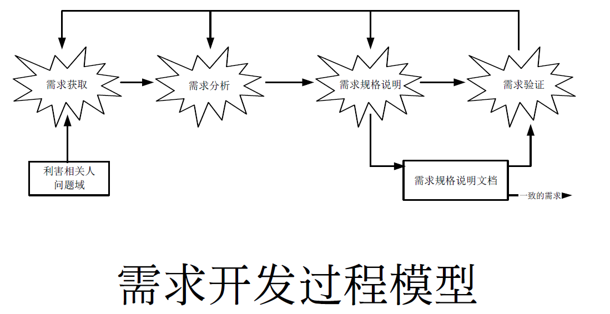
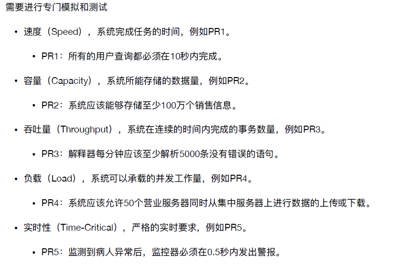
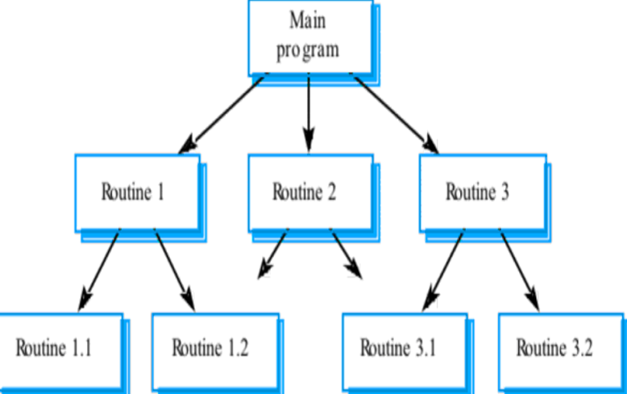
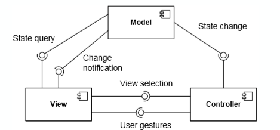

软件工程与计算II
软工II整理
01.软件工程基础
软件的特性
- 软件与现实世界关系更加密切，对需求的规格化更加困难
- 软件⽐硬件容易修改的多，并且不需要昂贵的⽣产线复制产品
- 软件没有损耗
- 软件不可见
云原生
软件类别
- 系统软件：操作系统、数据库、数据仓库、嵌⼊式设备、安全
- 编程软件：IDE、测试、持续集成、建模、度量
- 应用软件：商业、政府、休闲、医疗、教育、国防、 个⼈、专业、科学
应⽤软件
- 应⽤软件被开发的⽬的和意图来源于现实世界的问题。
- 应⽤软件必须基于现实才能解决问题。
- 软件最终要被⽤于现实并改进现实。
工程
- 定义：创造性地应用科学原理，设计或开发结构、机器、仪器或制造工艺，或单独或组合使用它们的工程；或在充分了解它们的设计的情况下建造或操作它们；或在特定操作条件下预测它们的行为；就预期功能、运行的经济性或生命财产安全而言
- CCSE - About Engineer 关于工程师的介绍
- 工程师通过⼀系列的讨论决策，仔细评估项⽬的可选活动，并在每个决策点选择⼀种在当前环境中适合工当前任务的⽅法进⾏工作。可以通过对成本和收益进⾏折衷分析调整相应策略。
- 工程师需要对某些对象进⾏度量，有时需要定量的工作；他们要校准和确认度量⽅法，并根据经验和实验数据进⾏估算。
- 软件工程师强调项目设计过程的纪律性，这是团队⾼效工作的条件。
- 工程师可胜任研究、开发、设计、⽣产、测试、构造、操作、管理，以及销售、咨询和培训等多种角色。
- 工程师们需要在某些过程中使⽤工具，选择和使用合适的工具是工程的关键要素。
- 工程师们通过专业协会发展和确认原理、标准和最佳实践⽅法，并提⾼个⼈能⼒。
- 工程师们能够重用设计和设计制品。
工程的要素
- 具有解决实际问题的动机
- 应⽤科学知识指导⼯程活动
- 以成本效益比有效为基本条件
- 构建机器或事物
- 以服务⼈类为最终⽬的
软件工程定义
- 应用系统的、规范的、可量化的方法来开发、运行和维护软件，即将工程应用到软件。
- 对(1)中各种方法的研究。
软件工程特点
- 软件⼯程是⼀种⼯程活动
- 软件⼯程的动机是解决实际问题
- 软件⼯程是科学性、实践性和⼯艺性并重的
- 软件⼯程追求⾜够好，不是最好
- 软件⼯程真正的产品是基于虚拟计算机的软件⽅案
- 软件⼯程的最终⽬的是要促进整个社会的进步
软件工程技术域
- 软件工程管理知识域：
角色分工
- 需求工程师，⼜被称为需求分析师：承担需求开发任务。软件产品的需求开发⼯作通常由多个需求工程师来完成，他们共同组成⼀个需求工程师⼩组，在⾸席需求工程师的领导下开展⼯作。通常⼀个团队只有⼀个需求工程师⼩组。
- 软件体系结构师：承担软件体系结构设计任务。通常也是由多⼈组成⼀个小组，并在首席软件体系结构师的领导下开展⼯作。通常⼀个团队只有⼀个软件体系结构师小组。
- 软件设计师：承担详细设计任务。在软件体系结构设计完成之后，可以将其部件分配给不同的开发小组。开发小组中负责所分配部件详细设计工作的⼈员就是软件设计师。⼀个团队可能有⼀个或多个开发小组。 ⼀个小组可能有⼀个或多个软件设计师。
- 程序员：承担软件构造任务。程序员与软件设计师通常是同⼀批⼈，也是根据其所分配到的任务开展⼯作。
- ⼈机交互设计师：承担⼈机交互设计任务。⼈机交互设计师与软件设计师可以是同⼀批⼈，也可以是不同⼈员。在有多个小组的软件工程团队中，可以有⼀个单独的人机交互设计师小组，也可以将⼈机交互设计师分配到各个小组。
- 软件测试⼈员：承担软件测试任务。软件测试⼈员通常需要独⽴于其他的开发⼈员⻆⾊。⼀个团队可能有⼀个或多个测试⼩组。⼀个⼩组可能有⼀个或多个软件测试⼈员。
- 项⽬管理⼈员：负责计划、组织、领导、协调和控制软件开发的各项⼯作。相⽐于传统意义上的管理者，他们不完全是监控者和控制者，更多得是协调者。通常⼀个团队只有⼀个项⽬管理⼈员。
- 软件配置管理⼈员：管理软件开发中产⽣的各种制品，具体⼯作是对重要制品进⾏标识、变更控制、状态报告等。通常⼀个团队只有⼀个软件配置管理⼈员。
- 质量保障⼈员：在⽣产过程中监督和控制软件产品质量的⼈员。通常⼀个团队有⼀个质量保障⼩组，由⼀个或多个⼈员组成。
- 培训和⽀持⼈员：负责软件移交与维护任务。他们可以是其他开发⼈员的⼀部分，也可以是独立的⼈员。
- ⽂档编写⼈员：专⻔负责写作软件开发各种⽂档的⼈员。他们的存在是为了充分利⽤部分宝贵的⼈⼒资源(例如需求工程师和软件体系结构师)，让这些⼈⼒资源从繁杂的⽂档化⼯作中解放出来。
02.项目启动
项目和项目管理
- 项目的定义
- 具有⼀个明确的目标
- 有限定的开始和结束日期
- 有成本限制
- 消耗人力和非人力资源
- 多工种合作
- 项目管理的目标
- 在限定时间内
- 在⼀定的成本内
- 在要求的质量水平上
- 高效使用资源
- 获得客户认可
- 过程组：项目启动、项目计划、项目执⾏，项目跟踪与控制和项目收尾
- 活动：计划制定、团队管理、成本控制、质量保障、度量、过程管理、进度跟踪与控制、风险管理、配置管理
团队组织与管理
- 团队定义：为了⼀致的目的、绩效标准、⽅法⽽共担责任并且技能互补的少数⼈。
- 团队结构
- 主程序员团队：决策需要由主程序员进行制定
- 效率高，如果完成把握大，并且需要时间紧迫，可以优先考虑
- 一个人的决断容易影响整个团队，如果项目复杂，主程序员会成为瓶颈。
- 适用于把握性大，时间要求紧的情况
- 民主团队：没有集中的瓶颈，成员发挥能动性，工作效率降低，冲突解决。敏捷+较有挑战性的项目
- 开放团队
- 为了创新而存在的。黑箱管理，问题在于项目进展没有可视度。
- 相对于前两个团队的需求明确，团队的需求并不明确
- 管理者主要负责清除出现的障碍。
- 开放团队是为了创新而存在
- 主程序员团队：决策需要由主程序员进行制定
- 团队建设(高凝聚力的团队被称为胶冻团队)
- 建立团队章程：建立明确的团队章程，统一团队成员的目标，对团队成员进行一定的约束。经验：有必要指定一定的章程，约束团队成员之间的行为，比如开会请假必须得到其他三人的同意，又如一旦某项决策做出，不同意者不能再后续阶段违反等
- 持续成功：设置小里程碑，每隔一段时间让团队体验成功。每次作业的检查结果一定程度上肯定了每个小阶段的工作。
- 和谐沟通：和谐沟通：建立持续有效的沟通机制，相互尊重，管道畅通，开放透明，坦诚真实。开会频率保持在每周一次左右为宜，在工作量大的时候，需要集体工作，当面沟通，另外吵架可以，但是需要达成一致。
- 不断总结：不断总结上一阶段的工作成果，运用项目评审等手段，进行反思回顾，指导后续阶段的开发。每个阶段都会有启动会议对上个阶段进行回顾，评审会议对此阶段进行评审。
- 避免团队杀手：需要对别人的工作全心全意的信任，尽管评审是必要的。产品质量的降低会使凝聚力下降
软件质量保障
质量属性
- ⼈们通常会选⽤系统的某些质量要素进行量化处理，建⽴质量特征，这些特征被称为质量属性
- 为了根据质量属性描述和评价系统的整体质量，⼈们从很多质量属性的定义当中选择了⼀些能够相互配合、相互联系的特征集，它们被称为质量模型
质量模型
- 因素
- 功能性
- 可靠性
- 易用性:人机交互
- 效率
- 可维护性
- 可移植性
质量保障
度量产生自统计控制思想。
测度就是为了描述软件产品而提供的定量指标，如代码行数
进行测度的活动被称为测量
度量是软件产品在特定属性上的量化测度程度
评审
- 在规划阶段，制定审查计划，决定审查会议的次数，安排每次审查会议的时间、地点、参与⼈员、审查内容等等。
- 在总体部署阶段，向所有参与审查会议的⼈员描述待审查材料的内容、审查的⽬标以及⼀些假设，并分发⽂档。
- 在准备阶段，审查⼈员各⾃独⽴执⾏检查任务。在检查的过程当中，他们可能会被要求使⽤检查清单、场景等检查⽅法。检查中发现的问题会被记录下来，以准备开会讨论或者提交给收集 ⼈员。
- 在审查会议阶段，通过会议讨论，识别、确认、分类发现的错误。
- 在**返⼯**阶段，修改发现的缺陷。
- 在跟踪阶段，要确认所有发现的问题都得到了解决，所有的错误都得到了修正。
软件配置管理的动机
- 在软件开发活动中，除了最终产品之外，还会产⽣很多中间制品，例如需求规格说明、需求分析模型、软件体系结构设计模型、详细设计模型等。这些制品是不同阶段、不同角色、不同软件开发活动进行协同的基础。
- 在复杂软件系统开发中，产⽣的制品数量众多，以⾄于开发者需要维护⼀个清单才能清楚项目所处的状态，理解已经完成的⼯作和将要进行的⼯作。
- 某个制品发⽣变化带来的最大挑战是如何确保其使用者能够得到最新的制品，避免开发协同出现问题
配置管理
- IEEE定义：用技术的和管理的指导和监督方法，来标识和说明配置项的功能和物理特征，控制对这些特征的变更，记录和报告变更处理及其实现状态，并验证与规格需求的⼀致性
- 配置项：置于软件配置管理之下的软件配置的各种有关项⽬，包括各类管理文档、评审记录与文档、软件文档、源码及其可执行码、运行所需的系统软件和支持软件以及有关数据等
- 基线：基线是指通过了评审和验证，可以作为后续开发工作基础而进入协同工作过程，需要纳入配置管理和执行变更控制的制品
- 配置管理活动：
- 标识配置项版本管理：确定应该被保留的部分，并且给予他们确定标识，包含配置项的特征，包括生产者、基线建立时间、使用者等。
- 版本管理：极其重要
- 变更控制：变更请求表单
- 配置审计：验证配置项的完整性、正确性、一致性和可追踪性。
- 状态报告：反映当前的配置状态。
- 软件发布管理：将配置项发布到开发活动之外，例如发布给客户。
管理实践
- 投入
- ⼈员的成本：这是最重要的一部分投⼊。 除了开发⼈员外，还要计算项目管理⼈员和其他相应⽀持⼈员的费用
- 工具的购买：包括计算机及其周围配套设备等硬件，也包括开发⼯具、办公套件等软件。
- 培训的费用：开发⼈员接受培训，获得开发项⽬所需技能的费⽤。
- 差旅费：拜访客户，参加会议等的费⽤。
- 维护的费用：定时的数据备份、系统监控、系统维修和升级等引起的费⽤。
- 生产停顿的损失：因为项⽬调试引起正常⼯作业务停顿的损失。
- 市场和服务的费用：推⼴软件产品所要的⼴告费用、参加展览会的费用等。
- 机会成本：因为投资该项目，而不能投资别的项目或者放银行收取利息的机会成本。
- 产出
- 节约商业活动成本：只要是和无新软件系统时候比较，将节省的时间和原材料折算成量化的数字。例如，开发了新的库存管理系统后，加快了流通并减少了库存浪费。
- 创新商机增加销售：指由于使用新软件带来的盈利，可能是软件产品本身的销售，也可能是软件项目带来的营业成⻓。
- 提高品牌含金量： 提高质量和客户满意度，可以带来品牌含金量的提高。这比较虚⼀点，但也可以像企业的无形资产⼀样估算。
项目实践
为实践项目组建你的团队：
- 选择技能互补的成员组成团队，明确分工；
- 根据成员特点，选择团队结构；(建议使用民主团队)
- 建立团队章程；
- 明确团队的交流沟通⼿段。
- 需要保留开发过程，用来确保可查
配置管理
- 所有产物都通过Gitlab来管理
- 建立Group
- ⽂档采用MD文件
03.需求基础
需求工程
需求工程的概念：所有需求处理活动的总和。它收集信息、分析问题、整合观点、记录需求并验证其正确性，最终描述出软件被应用后与其环境互动形成的期望效应。
三个主要任务：
- 需求工程必须说明软件系统将被应用的应用环境及其目标，说明用来达成这些目标的软件功能，也即要同时说明软件”需要做什么“和”为什么需要做”。
- 需求⼯程必须将⽬标和功能反映到软件系统当中，映射为可行的软件行为，并对软件⾏为进行准确的规格说明。
- 现实世界是不断变化的世界，因此需求⼯程还需要妥善处理⽬标和功能随着时间演化的变动情况。
需求工程活动
需求开发
- 
需求获取
- 从人、文档或者环境当中获取需求的过程
- 要利⽤各种方法和技术来发现需求
- 目标分析：1. 根据问题确定目标:发现用户的期望和现实之间的差距 2. 通过分析利害关系人确定目标
- 需求获取方法：面谈、问卷、文档分析、头脑风暴、专题讨论、原型、民族志、竞品分析
- 问题与解决方案
- 用户和开发⼈员的背景不同，⽴场不同：消除默认知识
- 普通用户缺乏概括性、综合性的表述能力：专业的需求人员
- ⽤户存在认知困境：原型(做一个原型帮助用户理解的草图模型)
- ⽤户越俎代庖：需求是开发人员开发出来的，不是⽤户提出来的；协商
- 缺乏用户参与：为用户参与提供⽅便
需求分析
- 通过建模来整合各种信息，以使得人们更好的理解问题。
- 为问题定义出⼀个需求集合，这个集合能够为问题界定⼀个有效的解决方案。
- 检查需求当中存在的错误、遗漏、不⼀致等各种缺陷，并加以修正
- 边界分析
- 定义项目的范围。系统边界之内定义的是系统需要对外提供的功能
- 系统边界的定义要保证系统能够和周围环境形成有效的互动
- 系统用例图、上下文图通常被用来定义系统的边界
需求规格说明
- 在系统用户之间交流需求信息
- 要简洁、精确、⼀致和易于理解
- 需求工程师在这个阶段的重要工作包括:
- 定制文档模版，提高效率
- 编写文档(模型语言和自然语言两种)
需求验证
- 需求规格说明文档至少要满足下面几个标准:
- 文档内每条需求都正确、准确的反映了用户的意图；
- 文档记录的需求集在整体上具有完整性和⼀致性；
- 文档的组织方式和需求的书写方式具有可读性和可修改性(方便保证版本简化)。
- 需求验证的方法：同级评审、原型、模拟等
- 需求规格说明文档至少要满足下面几个标准:
需求管理
- 保证需求作用的持续、稳定和有效发挥：在需求开发活动之后，设计、测试、实现等后续的软件系统开发活动都需要以围绕需求开展⼯作
- 进行变更控制：纳入和实现合理的变更请求，拒绝不合理的变更请求，控制变更的成本和影响范围
需求基础
- IEEE对需求的定义：
- 用户为了解决问题或达到某些目标所需要的条件或能力；
- 系统或系统部件为了满足合同、标准、规范或其它正式文档所规定的要求而需要具备的条件或能力；
- 对1或2中的一个条件或一种能力的一种文档化表述。
- 需求开发的目标
- 问题域
- 现实世界运行规律的一种反映
- 需求的产生域，也是需求的解决地。
- 最终的软件产品要在现实中部署，它能够部分影响问题域，但不能任意改变现实
- 软件开发必须尊重问题域，不能因为技术原因妄⾃修改现实世界的实际情况。
- 规格说明
- 软件产品的方案描述，它以软件产品的运行机制为主要内容。
- 它不是需求但实现需求，不是问题域但需要与问题域互动。
- 规格说明要以关注对外交互的⽅式描述软件解决⽅案，它既需要从软件产品的⻆度⽽不是⽤户的⻆度进⾏描述，⼜不能太多地涉及软件产品的内部构造机制。
- 为什么描述的是交互？因为交互对我们而言是一个对外的重要展示。
- 需求、问题域、规格说明三者要进行区分
- 需求层次性
- 三种需求层次:业务需求、用户需求、系统级需求
- 业务需求(目标，解决方案与系统特性)
- 业务需求是高层次的解决方案和系统特性、系统开发的战略出发点、高层次的需求，描述为什么要开发系统。
- 为什么是系统特性？因为还没有到细节的部分
- 特性说明了系统为用户提供的各项功能，它限定了系统的范围(Scope)
- 例：在系统使用3个月后，销售额度应该提⾼20%
- 用户需求(任务，问题域知识)
- 问题域知识：执行具体任务的用户对系统所能完成任务的期望，描述了系统能帮用户做什么
- 直接用户
- 间接用户(通用软件的销售人员和售后支持人员)
- 问题域知识：是需要了解到期望所来源的背景知识。
- 特性
- 模糊、不清晰(允许适度的用形容词和副词)
- 多特性混杂 (功能和⾮功能的混杂)
- 多逻辑混杂 (⼀个任务需要多次系统交互才能完成)
- 例：系统应该允许客户经理添加、修改或者删除会员个⼈信息
- 问题域知识：执行具体任务的用户对系统所能完成任务的期望，描述了系统能帮用户做什么
- 系统级需求
- 需求分析模型：用户对系统行为的期望，每个系统级需求反映了一次外界与系统的交互行为，或者系统的⼀个实现细节(和用户需求有着很大的区别)
- 描述了开发人员需要实现什么
- 将用户需求转化为系统需求的过程是⼀个复杂的过程
- 首先需要分析问题领域及其特性，从中发现问题域和计算机系统的共享知识，建⽴系统的知识模型；
- 然后将⽤户需求部署到系统模型当中，即定义系列的系统⾏为，让它们联合起来实现⽤户需求，每⼀个系统⾏为即为⼀个系统需求。
- 该过程就是需求⼯程当中最为重要的需求分析活动，⼜称建模与分析活动。
- 系统级需求还可能会补充一些与软件实现相关的细节
- 例：在客户经理输⼊会员的客户编号时，系统要提供该会员的个⼈信息
需求分类
需求图谱
- 项目需求(人的数量、计划成本、时间)：项目的成本要控制在60万元⼈⺠币以下、项目要在6个月内完成
- 过程需求(人的分工、合作、方法、工具)：如在开发中，开发者要提交软件需求规格说明文档、设计描述⽂档和测试报告；项目要使用持续集成⽅法进行开发
需求的分类（IEEE）
- 功能需求：和系统主要共作相关的需求，即在不考虑物理约束的情况下，⽤户希望系统所能够执行的活动，这些活动可以帮助⽤户完成任务。功能需求主要表现为系统和环境之间的⾏为交互。
- 性能需求：系统整体或系统组成部分应该拥有的性能特征，包括速度、容量、吞吐量、负载、实时性
- 质量属性：系统完成工作的质量，即系统需要在⼀个”好的程度”上实现功能需求，例如可靠性程度、可维护性程度等。
- 对外接口：系统和环境中其他系统之间需要建⽴的接口，包括硬件接口、软件接口、数据库接口等等。
- 约束：进行系统构造时需要遵守的约束，例如编程语言、硬件设施等
功能需求
- 功能需求是最常见、最主要和最重要的需求，是能够为用户带来业务价值的系统⾏为
- 最需要按照三个抽象层次进行展开，说明了关系
- 软件产品产生价值的基础，需求检查最重要的部分
- 比如:在接到客户经理的请求后，系统应该为客户经理提供所有会员的个人信息
数据需求
- 功能需求的补充：如果在功能需求部分明确定义了相关的数据结构，那么就不需要再行定义数据需求
- 数据需求是需要在数据库、⽂件或者其他介质中存储的数据描述，通常包括下列内容：
- 各个功能使⽤的数据信息；
- 使用频率；
- 可访问性要求；
- 数据实体及其关系；
- 完整性约束；
- 数据保持要求。
性能需求
- 
质量属性
- 系统为了满足规定的及隐含的所有要求而需要具备的要素称为质量
- 质量属性是为了度量质量要素而选用的特征
- 质量模型就是能够为质量需求的描述和评价提供工作基础的特征集及特征之间的联系
常见质量属性
- 可靠性(Reliability)：在规格时间间隔内和规定条件下，系统或部件执⾏所要求能⼒的能⼒。
- 在进⾏数据的下载和上传中，如果⽹络故障，系统不能出现故障。能不能检测网络中断，并且进行恢复。
- 可用性(Availability)：软件系统在投⼊使⽤时可操作和可访问的程度或能实现其指定系统功能的概率。
- 系统的可⽤性要达到98%。
- 安全性(Security)：软件阻止对其程序和数据进行未授权访问的能力，未授权的访问可能是有意，也可能是无意的。
- VIP顾客只能查看自己的个人信息和购买记录；
- 收银员只能查看，不能修改、删除VIP顾客的信息。
- 可维护性(Maintainability)：软件系统或部件能修改以排除故障、改进性能或其他属性或适应变更了的环境的容易程度，包括可修改性(Modifiability)和可扩展性(Extensibility)。
- 如果系统要增加新的特价类型，要能够在2个⼈⽉内完成。
- 可移植性(Portability)：系统或部件能从⼀种硬件或软件环境转换⾄另外⼀种环境的特性。
- 集中服务器要能够在1⼈⽉内从Window 7操作系统更换到Solaris 10操作系统。
- 易用性(Usability)：与⽤户使⽤软件所花费的努⼒及其对使⽤的评价相关的特性。
- 使用系统1个⽉的收银员进⾏销售处理的效率要达到10件商品/分钟。
- 可靠性(Reliability)：在规格时间间隔内和规定条件下，系统或部件执⾏所要求能⼒的能⼒。
对外接口
- 解系统和其他系统之间的软硬件接⼝:包括硬件接口、软件接口、数据库接口等
- 接口的用途
- 接口的输⼊输出
- 数据格式
- 命令格式
- 异常处理要求
- 用户界面
- 解系统和其他系统之间的软硬件接⼝:包括硬件接口、软件接口、数据库接口等
约束
- 总体上限制了开发⼈员设计和构建系统时的选择范围
- 系统开发及运行的环境
- 包括目标机器、操作系统、网络环境、编程语⾔、数据库管理系统等
- 例：系统要使用Java语言进行开发。
- 问题域内的相关标准
- 包括法律法规、⾏业协定、企业规章等。
- 商业规则
- ⽤户在任务执⾏中的⼀些潜在规则也会限制开发⼈员设计和构建系统的选择范围
04.需求分析基础
需求分析基础
- 需求分析的任务
- 建立分析模型，达成开发者和用户对需求信息的共同理解:分析将复杂的系统分解为简单的部分以及它们之间的联系，确定本质特征，抛弃次要特征。
- 依据共同的理解，发挥创造性，创建软件系统解决方案:分析可以将一个问题分解为独立的、更简单的和易于管理的子问题来帮助寻找解决方案
- 模型
- 模型是对事物的抽象，帮助⼈们在创建一个事物之前可以有更好的理解
- 为了更好地理解需求获取所得到的复杂信息，需要集中关注问题的计算特性(数据、功能、规则等)，建立相关的软件模型
- 建模
- 建模的目标是建立系统的一个表示，这个表示以精确⼀致的方式描述系统，使得系统的使用更加容易
- 抽象和分解是建模最为常用的两种手段
- 需求分析模型
面向对象分析
面向对象分析过程
用例图
用例
- 定义：在系统(或者子系统或者类)和外部对象的交互当中所执行的行为序列的描述,包括各种不同的序列和错误的序列,它们能够联合提供⼀种有价值的服务
- 用例描述了在不同条件下系统对某一用户的请求的响应。根据用户的请求和请求时的系统条件,系统将执行不同的行为序列, 每⼀ 个行为序列被称为⼀个场景。⼀个用例是多个场景的集合。
- 用例图的建立：目标分析与解决方向的确定、寻找参与者、寻找用例、细化用例
用例图基本元素：用例、参与者、关系、系统边界
- 用例：椭圆
- 以用例的形式表达需求。
- 用例表示有助于构建、关联和理解基本需求的典型场景集。
- 场景是对系统在实践中如何使用的描述：用户与计算机系统之间的典型交互
- 一般会用动宾短语，加上actor作为主语就是句子了
- 参与者：小人
- 参与者是用户或其他系统对要开发的系统所扮演的角色。
- 用例图中的单个参与者可以表示多个用户(或系统)。
- 单个用户(或系统)也可以扮演多个角色。
- 参与者不需要是人，例如，需要来自当前系统的某些信息的外部系统也是参与者。
- 关系：简单的就是一条直线
- 有关
- 泛化关系，指向的是被泛化的。
- 包含关系
- 继承关系
- 系统边界：是一个框
- 强调重点是什么是要详细的，什么不是。
- 系统边界隐式存在于没有显式表示的系统边界的图中
- 参与者总是在边界之外，用例总是在边界之内。
- 系统边界是指一个系统所包含的系统成分与系统外事务的分界线
- 用例：椭圆
目标分析
- 问题目标的解决方案
- ×××连锁商店是一家刚刚发展起来的小型连锁商店，其前身是⼀家独立的小百货门面店。
- 首先是随着商店规模的扩大，顾客量大幅增长，手工作业销售迟缓，顾客购物排队现象严重，导致流失客源。
- 其次是商店的商品品种增多，无法准确掌握库存，商品积压、缺货和报废的现象上升明显。
- 再次是商店面临的竞争比以前更⼤，希望在降低成本，吸引顾客，增强竞争力的同时，保持盈利水平
- 业务需求
- BR1：在系统使⽤6个月后，商品积压、缺货和报废的现象要减少50%
- BR2：在系统使⽤3个月后，销售⼈员⼯作效率提⾼50%
- BR3：在系统使⽤6个月后，运营成本要降低15%
- 范围：⼈力成本和库存成本
- 度量：检查平均员工数量和平均每10,000元销售额的库存成本
- BR4：在系统使⽤6个月后，销售额度要提高20%
- 系统功能
- SF1：分析商品库存，发现可能的商品积压、缺货和报废现象
- SF2：根据市场变化调整销售的商品
- SF3：制定促销手段，处理积压商品
- SF4：与生产厂家联合进行商品促销
- SF5：制定促销手段进行销售竞争
- SF6：掌握员工变动和授权情况
- SF7：处理商品入库与出库
- SF8：发展会员，提高顾客回头率
- SF9：允许积分兑换商品和赠送吸引会员的礼品，提高会员满意度
- SF10：帮助收银员处理销售与退货任务
寻找参与者与用例
- 每个用户的任务(目标)都是⼀个独立用例
细化用例
- 如果用例的粒度不合适就需要进⾏细化和调整。
- 判断标准是：⽤例描述了为应对一个业务事件，由一个用户发起，并在一个连续时间段内完成，可以增加业务价值的任务
- 产品具体的细化（例子）
- 特价策略制定、赠送策略制定两个用例的业务目的、发起源和过程基本相同，仅仅是业务数据不同，所以可以合并为⼀个用例销售策略制定。
- 会员管理用例有两个明显不同的业务事件，可以被细化为发展会员和礼品赠送2个更细粒度的用例。
- 客户经理的库存管理用例也有三个不同的业务⽬标：出库、⼊库和库存分析，所以也应该细化为三个用例商品出库、商品⼊库和库存分析，其中库存分析⽤例与总经理的库存分析⽤例相同。
概念类图
概念
- 概念类图又被称为”领域模型”(Domain Model)
- 类图是面向对象分析方法的核心：类图描述类(对象)和这些类(对象)之间的关系
- 概念类图和设计类图的不同点：关注系统与外界的交互，⽽不是软件系统的内部构造机制
- 类型、方法、可见性等复杂的软件构造细节不会在概念类图中
- 类图只有类和类名，没有包含方法。
- 用例不是概念类，同一个用例可能产生多个概念类
概念类图基本元素
- 对象
- 标识符：对象自治、对象请求写作
- 状态：存储数据，如密码、名称
- 行为：利用数据做什么
- 类:对象集合的抽象
- 链接
- 对象之间的互相协作的关系
- 描述了对象之间的物理或业务联系
- 关联
- 对象之间链接的抽象
- 聚合(空心菱形)与组合(实心菱形)
- 继承：泛化关系
- 对象
建立概念类图的步骤
- 对每个用例文本描述，尤其是场景描述，建立局部的概念类图
- 识别候选类(名词分析法)
- 确定概念类 (看是否满足既有状态又有行为)
- 既需要维持一定的状态，又需要依据状态表现一定的行为：确定为一个概念类
- 如只需要维护状态，不需要表现行为：其他概念类的属性
- 不需要维护状态，却需要表现行为：首先重新审视需求是否有遗漏，因为没有状态支持的对象无法表现行为；如果确定没有需求的遗漏，就需要剔除该候选类，并将行为转交给具备状态支持能力的其他概念类
- 既不需要维护状态，又不需要表现行为：应该被完全剔除
- 识别关联(文本中提取出”名词＋动词＋名词”的结构)：第一标准是满足需求的要求，第二标准是现实状况
- 识别重要属性：协作的必要信息，通过分析用例的描述，补充问题域信息发现。
- 将所有用例产⽣的局部概念类图进行合并，建⽴软件系统的整体概念类图
- 自己注:先画关联关系，再添加类的属性
- 对每个用例文本描述，尤其是场景描述，建立局部的概念类图
顺序图（交互图）
- 概念
- 行为模型显示了对象之间的交互，以产生一些特定的系统行为，这些行为被指定为一个用例
- UML中的序列图(或协作图)用于建模对象之间的交互
- 分析阶段，主要是利用系统顺序图，表达系统和外部参与者之间的交互行为：务必要严格谨慎的界定系统
- 图例
- 系统顺序图
- 画外部和内部之间的交互应当仔细辨别系统和系统(也就是系统边界)
- 不同框的含义:
- alt一定要选(多选一):注意，每一种可选分支之间要用虚线分割，而且在表示执行态的圆柱上面要写监护条件，放在[ ]里面。
- opt一定要选(选择0或者1)
- loop:表示循环，在旁边使用[]书写循环条件
- 步骤:
- 确定上下文环境
- 根据用例描述找到交互对象
- 按照用例描述中的流程顺序逐步添加消息

状态图
- 概念
- 状态：一组可观察的情况，描述了一个系统在给定时间的行为
- 状态转换：从一个状态到另一个状态的转换
- 事件：使系统表现出某种可预测的行为形式的事件
- 行为：由于过渡而发生的过程
- 创建状态图的步骤
- 确定上下文环境
- 状态图是立足于状态快照进行行为描述的，因此建立状态图时首先要搞清楚状态的主体，确定状态的上下文环境。常见的状态主体有：类、用例、多个用例和整个系统。
- 状态应该是相对较多，比较复杂的。
- 识别状态
- 状态主体会表现出⼀些稳定的状态，它们需要被识别出来，并且标记出其中的初始状态和结束状态集。在有些情况下，可能会不存在确定的初始状态和结束状态。
- 建立状态转换
- 根据需求所描述的系统行为，建⽴各个稳定状态之间可能存在的转换。
- 补充详细信息，完善状态图
- 添加转换的触发事件、转换行为和监护条件等详细信息
- 确定上下文环境
结构化分析
- 方法
- 自顶向下分解
- 各种图
- 数据流图
- 实体关系图
- 状态转移图
- 结构图
数据流图
- 数据流图
- 数据流图将系统看做是过程的集合，其中一些由人来执行，另一些由软件系统来执行。
- 过程的执行就是对数据的处理：它接收输入，进行数据转换，输出结果。
- 数据流图主要是展示了数据在通过系统如何进行了变化。
- 可能需要和软件系统外的实体尤其是人进行交互
- 数据的变化包括：被转换、被存储、或者被分布

- 外部实体：数据的产生或者消耗者，是待构建软件系统之外的人、组织、设备或者其他软件系统，它们不受系统控制，开发者不能以任何方式操纵它们
- 过程：
- 将数据从输入转换到输出：示例：计算税金，确定面积，格式报告，显示图形必须始终以某种方式处理数据以实现系统功能
- 过程是指施加于数据的动作或者行为，它使得数据发生变化，包括被转换、被存储或者被分布
- 数据流：数据流是数据的运动，它是系统与其环境之间或者系统内两个过程之间的通信形式。
- 数据存储：软件系统需要在内部手机、保存，以供日后使用的数据集合。
- 数据流图分为三种图：上下文图、0层图和N层图
- 上下文图是DFD的最高层次的图，是系统功能的最高抽象。上下文将整个系统看做一个过程，这个过程实现系统的所有功能
- 0层图通常被用作整个系统的功能概图为了概述整个系统的功能，建立0层图时需要分析需求获取的信息，归纳出系统的主要功能
- N层图：父过程为被分解的过程，子图为分解后产生的揭示更多细节的图
- 具体见ppt
实体关系图
实体关系图
传统实体
- 实体并不是孤立存在的，相互交互相互影响
- 参与关系的每个实体都针对关系拥有最大基数和最小基数
- 最大基数:对关系中任意的其他实体实例，该实体可能参与关系的最大数量。最大基数为1，表示为One，否则为Many
- 最小基数:对关系中任意的其他实体实例，该实体可能参与关系的最小数量。实体在关系中的最小基数被标记为Optional,最小基数为1时，实体在关系中的最小基数被标记为mandatory
关系
- 系统必须记住的事实，不能或不能计算或推导出来
- 关系的几个实例可以存在
- 实体可以以多种方式关联

- 键：实体的⼀个或者多个属性能够唯⼀确定和标示每个实例，这些属性或者属性组合就被称为实体的标示符，或者键
- 系统必须记住的事实，不能或不能计算或推导出来
建立实体关系图的步骤
- 第1级-对所有数据对象(实体)及其相互之间的”连接”建模
- 第2级-对所有实体和关系建模
- 第3级-对所有实体、关系和属性建模，以提供进一步的深度
使用需求分析方法细化和明确需求
为什么要细化
- 用户需求的描述的模糊性和系统设计所需要的严谨性之间的矛盾
如何细化
- 需求分析建模
- 发现其中的遗漏、冲突、冗余和错误
- 迭代(获取、分析、获取、分析······)
系统顺序图有助于发现交互性的缺失
概念类图有助于发现
部分信息的使用不准确
部分信息不明确
遗漏了重要内容
状态图有助于发现页面的跳转
建立系统需求
- 8种规格说明：
- by mode 功能需求分类
- by user class
- by object
- by feature
- by stimulus
- by functional hierarchy
- multiple organization
- 不同的分析⽅法适合不同的规格说明
- 8种规格说明：
05.需求文档化与验证
用例文档
- 为什么文档化需求
- 方便团队工作和沟通
- 方便项目管理
- 更加明确的体系架构
- 方便软件设计
- 方便编码
- 方便维护
- 为什么建立需求规格说明？结合试验说明（重要）
- 方便交流，软件开发过程中，子任务与人员之间存在错综复杂的关系，存在大量的沟通和交流，所以在软件开发中要编写不同类型的文档，每种文档都是针对项目中需要广泛交流的内容。因为软件需求需要进行广泛交流，所以要把需求文档化。
- 需求规格说明是在软件产品的角度以系统级需求列表的方式描述软件系统解决方案，书写需求规格说明，可以建立管理控制的基线，方便任务分配，制定工作计划，进行跟踪和度量。
- 在实验中，需求规格的重要性不只体现在结果上，还包括中间过程，在书写需求规格过程中，才真正把问题域的问题和分析模型的成果转化为系统级需求，方便小组成员真正明确需求，个人认为在这个阶段包含一部分的需求在发现和完整化。
- 用例文档
- 在用户的角度以用例文本为主描述软件系统与外界的交互
- 基本职责是把问题域信息和需求传达给软件系统解决方案的设计者
- 用例图等描述图可以更加直观的了解这部分
软件需求规格说明文档（SRS）
- 概念
- 在软件产品的⻆度以系统级需求列表的⽅式描述软件系统解决方案
- 模板
文档化需求
注意事项
- 简洁:动词名词+辅助词，不要使用复杂长句、形容词和副词。
- 精确:不能产生起义或无法理解。
- 易读(查询)：有效使用引言、目录、索引等能够增强文档易读性的方法；使用系统化的方式组织内容信息，提供文档内容的可读性。
- 易修改：使用相同的语句格式组织相关联或相似的信息；使用列表组织独立、并列的信息；使用编号表达繁杂信息之间的关系。引用而不是重复
系统化的方式
- 使用相同的语句格式来描述相似、关联的信息。
- 使用列表或者表格来组织独立、并列的信息。
- 使用编号来表达繁杂信息之间的关系,包括顺序关系、嵌套关系和层次关系。
- 对图、表进行编号
- 对⽂档的章节进行编号
- 对信息内容进行标识和编号
需求书写要点
- 需求书写要点
- 使用用户术语:不要使用计算机术语(导致用户无法理解)
- 可验证：不可验证的需求一般是因为描述模糊或者过于抽象
- 可行性：需求必须能够在系统及其运行环境的已知条件和约束下实现。要考虑在限定成本、时间和人力约束内，实现需求的可能性
- 需求规格说明文档书写要点
- 充分利用标准的文档模版，保持所有内容位置得当
- 保持⽂档内的需求集具有完备性和⼀致性。
- 为需求划分优先级(可以分为高中低、也可以分为1-10等分)
- 需求书写要点
验证需求文档
- 评审
- 评审的人员不能仅由技术人员组成，必须包括客户和用户
- 在评审中使用线索，⽤户对场景与线索表现出了最⼤的兴趣
- 使用需求检查列表
- 开发系统测试用例
- 基于用例描述，可以为销售处理确定测试用例套件
- 测试用例套件是测试用例的集合，将有关测试用例集合在一起
- 建立测试用例
- 主要是基于规格的技术，设计测试场景的输⼊与输出数据
- 不断地添加测试用例来完成测试
- 评审
度量需求功能点
度量需求
- 用例的数量
- 平均每个用例中的场景数量
- 平均用例行数
- 在一个尺度下进行分析
- 软件需求数量
- 非功能需求数量
- 功能点数量
- 用例的数量
度量的意义
- 如果平均的用例场景数量过低，那么就可能存在对异常流程考虑不周的可能。
- 如果平均用例行数过大或者过小，那么可能对⽤例的细分粒度过⼤或者过小。
- 用例数量、软件需求数量和功能点数量应该是相对比例均衡的，如果三者之间有着**⾮常大的差距**，那么可能会有需求的遗漏。
功能点度量
用于估算和度量软件系统规模与复杂度的抽象单位
功能点测度总数：
08.软件设计基础
什么是软件设计
- 概念
- 软件设计是指关于软件对象的设计，是一种设计活动。软件设计既指软件对象实现的规格说明，又指这个规格说明产生的过程。
- 软件设计活动以需求开发的制品(需求规格说明和分析模型)为基础，构建软件设计方案描述和原型，为后期的构造活动提供规划或蓝图。
- 软件设计兼具工程性和艺术性，由于软件系统的可变性，软件设计具有演化性，也因为软件设计的过程实际上就是一系列决策发生的过程，软件设计具有决策性。
- 软件设计的核心思想
- 软件设计方法的核心问题：控制系统复杂度
- 分解与抽象是软件设计的核心思想，两者都是由层次性的，彼此之间可以嵌套使用。
- 分解:横向上将系统分割为几个相对简单的子系统与子系统之间的关系
- 抽象:在纵向上聚焦个子系统的接口(这里的接口与实现相对)，可以分离接口和实现，使得人们更好的关注软件系统本质，降低复杂度。
- 设计
- 定义
- 设计(名词):⼀个对象的规格说明。它由⼈创造,有明确的⽬标,适⽤于特殊的环境,由⼀些基础类型构件组成,满⾜⼀个需求集合,受⼀定的限制条件约束。
- 设计(动词):在⼀个环境中创建对象的规格说明
- 设计经常需要⼀个设计师考虑⼀个对象或过程的审美、功能以及其他方面，这通常需要进⾏相当的研究、思考、建模、交互调整和重新设计。
- 分类
- 工程设计和艺术设计
- 理性主义和经验主义
- 具体见PPT
- 定义
- 软件设计的演化性
- 需求是外部表现，需求和内部结构是有鸿沟的。
- 非功能需求(质量需求)
- 始终进行迭代
- 设计的决策
- 决策的约束性
- 需求；环境；资源；技术 …
- 最初的需求确定了对设计情况的最基本的约束和要求。
- 通常，在设计工作本身中最终会发现更多的约束。
- 约束既适用于设计的工件，也适用于设计活动中涉及的流程和参与者
- 决策的约束性
软件设计的分层（重要）
- 低层设计
- 将基本的语言单位(类型与语句)，组织起来，建立高质量的数据结构+算法
- 常见设计场景：
- 数组的使用，链表的使用，内存的使用，遍历算法，递归算法…
- 一次问相对比较大的内存，然后我们自己在进行的内存的分配
- 经典场景：
- 堆栈，队列，树，排序算法，查找算法…
- 数据结构与算法审美：简洁、结构清晰，坚固(可靠、高效、易读)
- 低层设计本质：屏蔽程序中复杂数据结构与算法的实现细节

- 模块划分
- 1970s：函数的成熟与模块的出现
- 模块划分：将系统分成简单片段：⽚段有名字，可以被反复使用
- 名字和使⽤⽅法称为模块的抽象与接⼝
- 模块内部的程序⽚段为精化与实现
- 中层设计
- 开始：模块划分隐藏⼀些程序片段(数据结构+算法)的细节，暴露接口于外界
- 模块化的目标：完全独立性
- 方法：模块化、信息隐藏、抽象数据类型、封装
- 高层设计：体系结构
- 部件承载了系统主要的计算与状态
- 连接件承载部件之间的交互
- 部件与连接件都是抽象的类型定义(就像类定义)，它们的实例(就像类的对象实例)组织构成软件系统的整体结构，配置将它们的实例连接起来
软件设计过程、方法和模型、描述
- 软件设计过程的主要活动
- 软件设计的模型和方法
- 结构化设计方法
- 面向对象设计
- 数据为中心设计:有一些项目是做数据仓库等的，数据爬取操作和读取。
- 基于构件的设计:调用构件和库
- 形式化方法设计
- 描述软件设计的模型，通常可以分为两类:
- 静态模型
- 静态模型是通过快照 的方式对系统中时间不变的属性进行描述。通常描述的是状态,而不
是行为。
- 静态模型是通过快照 的方式对系统中时间不变的属性进行描述。通常描述的是状态,而不
- 动态模型：动态模型通常描述的是系统行为和状态转移。
- 静态模型
- 软件设计描述
09.软件体系结构基础
- 软件体系结构发展历史略
理解软件体系结构
概念
- 软件体系结构：现代系统组件和子系统相互作用形成系统的结构和组织，以及最好在系统级别设计和分析的系统属性。
- 软件体系结构包含有关以下方面的重要决策
- 软件系统的组织
- 选择组成系统的结构元素及其接口，以及这些元素之间的协作所指定的行为，
- 将这些元素组成越来越大的子系统，
- 指导该组织，这些元素及其界面，协作和组成的结构元素及其接口。
- 软件体系结构={部件(Component),连接件(Connector),配置(Configuration)}
- 部件是软件体系结构的基本组成单位之⼀,承载系统的主要功能,包括处理与数据;
- 连接件是软件体系结构的另一个基本组成单位,定义了部件间的交互,是连接的抽象表示;
- 配置是对”形式”的发展,定义了”部件”以及”连接件”之间的关联方式,将它们组织成系统的总体结构。
物理与逻辑
- 模块
- 逻辑：⼀个模块调用另⼀个模块
- 物理实现
- 基本：接口调用
- 需要传递数据对象怎么办？
- 逻辑：⼀个模块给另⼀个模块传递数据流
- 物理实现：读写共享数据、pipe…
- 物理实现的载体
- 低层：基本类型+基本控制结构
- 中层：OO编程语言机制
- 类声明、实例创建与撤销、实例⽣命期管理
- 类权限控制机制
- 复杂机制：继承…
- 高层：导⼊导出和名称匹配
- 模块
高层抽象(体系结构 = 部件 + 连接件 + 配置) 重要
概念
- 组件是计算和状态的聚合
- 连接件是组件之间的关系的聚合
- 连接件是⼀个与部件平等的单位。
- 部件与连接件是比类、模块等软件单位更高层次的抽象
部件
- 封装系统架构中的处理和数据的元素称为软件组件
- 件通常提供特定于应用程序的服务
- 部件承载系统主要功能，包括处理和数据
原始部件和复合部件
部件可以分为原始(Primitive)和复合(Composite)两种类型。
原始类型的部件可以直接被实现为相应的软件实现机制。
复合部件则由更细粒度的部件和连接件组成,复合部件通过局部配置将其内部的部件和连接件连接起来,构成⼀个整体。
连接件
- 在复杂的系统中，交互可能比单个组件的功能更重要和更具挑战性
- 连接件定义了部件间的交互，是连接的抽象表示
- 与部件相似,在实现上连接件也可以分为原始(Primitive)和复合(Composite)两种类型。原始类型的连接件可以直接被实现为相应的软件实现机制。
- 复合连接件则由更细粒度的部件和连接件组成,复合连接件通过局部配置将其内部的部件和连接件连接起来,构成⼀个整体。
配置
- 组件和连接器以给定系统体系结构中的特定方式构成，以实现该系统的目标
- 为了对软件体系结构进行更严格、准确的描述，人们建立了体系结构描述语言(ADL)，用于描述软件体系结构的形式化模型语言。
- 配置定义了部件和连接件之间的关联方式，将他们组织成系统的总体结构。
高层抽象优点
- 直观，便于理解
- 验证正确性
- 关注度分离，降低复杂度
体系结构风格初步
这部分需要重要掌握每一种风格的优点缺点和画图
分类
主程序子进程风格
- 组件：程序、函数和模块
- 连接件：在上述三个组件之间相互调用
- 
- 设计决策与约束
- 基于声明–使用(程序调用)关系建立连接件,以层次分解的方式建立系统部件, 共同组成层次结构。
- 每⼀个上层部件可以”使用”下层部件，但下层部件不能”使用”上层部件，即不允许逆方向调用。(层次性分解，基于定义使用关系)
- 系统单线程执行。主程序部件拥有初的执⾏控制权，并在”使用”中将控制权转移给下层子程序。
- 子程序只能够通过上层转移来获得控制权,可以在执⾏中将控制权转交给下层的子程序,并在自身执行完成之后必须将控制权还交给上层部件。
- 隐含子系统结构。
- 实现
- 主要实现机制:模块实现。
- 功能分解
- 集中控制
- 每个构件⼀个模块实现：主要是单向依赖
- 使⽤utility或tools等基础模块
- 优缺点
- 优点：流程清晰,易于理解；强控制性
- 缺点：程序调用是⼀种强耦合的连接方式,非常依赖交互方的接口规格,这会使得系统难以修改和复用；程序调用的连接方式限制了各部件之间的数据交互,可能会使得不同部件使用隐含的共享数据交流,产⽣不必要的公共耦合
面向对象风格
- 组件：对象或模块(调用方法)
- 连接件：函数或者调用
- 设计决策及约束
- 依照对数据的用情况,用信息内聚的标准,为系统建立对象部件。每个对象部件基于内部数据提供对外服务接口,并隐藏内部数据的表示。
- 基于方法调用(Method Invocation)机制建立连接件,将对象部件连接起来。
- 每个对象负责维护其自身数据的⼀致性与完整性,并以此为基础对外提供”正确”的服务。
- 每个对象都是⼀个自治单位,不同对象之间是平级的,没有主次、从属、层次、分解等关系。
- 实现
- 主要实现机制：模块实现
- 任务分解
- (委托式)分散式控制
- 每个构件⼀个模块实现
- 使用接口将双向依赖转换为单向依赖
- 将每个构件分割为多个模块，以保证单向依赖
- 每个模块内部可以是基于面向对象方法，也可以基于结构化
- 使⽤utility或tools等基础模块
- 面向对象式风格的优点有：
- 内部实现的可修改性。
- 易开发、易理解、易复用的结构组织。
- 面向对象式风格的缺点有:
- 接口的耦合性。
- 标识的耦合性。
- 副作用
分层风格
- 组件：通常是过程或对象的集合。
- 连接件：通常在受限可见性下进行过程调用或方法调用。
- 设计决策与约束
- 从低层到高层,部件的抽象层次逐渐提升。每个下层为邻接上层提供服务, 每个上层将邻接下层作为基础设施使用。也就是说,在程序调用机制中上层调用下层。
- 两个层次之间的连接要遵守特定的交互协议,该交互协议应该是成熟、稳定和标准化的。也就是说,只要遵守交互协议,不同部件实例之间是可以互相替换的。
- 跨层次的连接是禁止的，不允许第 I 层直接调用 I+N(N>1)层的服务。(也就是必须逐层进行调用)
- 逆向的连接是禁止的，不允许第 I 层调⽤第 J(J < I)层的服务
- 实现
- 关注点分离(每层逐次抽象)
- 层间接口使用固定协议(固定控制)
- 每层⼀或多个模块实现
- 单向依赖
- 层间数据传递建立专门模块
- 使⽤utility或tools等基础模块
- 优缺点
Model-View-Controller Style MVC风格
子系统模型被设计的不用依赖任何一种视图或者控制子系统
任何他们状态的修改都会被传播给显示子系统

组件
- 模型组件负责保持问题域知识和确认视图层的修改
- 视图组件负责显示信息给用户并且将用户的行为传递给控制器
- 控制器
- 修改模型的状态：将用户的行为和模型的更新映射起来
- 选择用来反映的视图
连接件：方法调用，信息，事件
设计决策和约束
- 模型、视图、控制是分别是关于业务逻辑、表现和控制的三种不同内容抽象。
- 如果视图需要持续地显示某个数据的状态,那么它首先需要在模型中注册对该数据的兴趣。如果该数据状态发生了变更,模型会主动通知视图,然后再由视图查询数据的更新情况。
- 视图只能使用模型的数据查询服务,只有控制部件可以调用可能修改模型状态的程序。
- 用户行为虽然由视图发起,但是必须转交给控制部件处理。对接收到的用户行为, 控制部件可能会执行两种处理中的⼀种或两种：调用模型的服务,执行业务逻辑;提供下⼀个业务展现。
- 模型部件相对独立,既不依赖于视图,也不依赖于控制。虽然模型与视图之间存在⼀个”通知变更”的连接,但该连接的交互协议是⾮常稳定的,可以认为是非常弱的依赖。
实现
- 模型-视图-控制风格需要为模型、视图和控制的每个部件实例建立模块实现,各模块间存在导⼊/导出关系,程序调用连接件不需要显式的实现。
- 特定技术实现，通常专用于WEB
- Model与Controller单向
- Controller与View双向
- Model与View双向
- 典型实现
- View： JSP，HTML
- Controller： Servlet
- Model： JavaBean
效果
分层与MVC
判断题：
- 按照功能分解的方式进行模块分割能够实现高内聚的软件设计：√
- 体系结构设计是软件非功能性的实现，而详细设计主要是软件功能性的实现。：√
10.软件体系结构设计与构建
体系结构设计
步骤（重要）
- 分析关键需求和项目约束：分析用例文档和需求规格说明书(包含需求规格和项目约束)。注意既要考虑功能性需求，又要考虑非功能性需求，甚至很大意义上体系结构设计是为了满足非功能性需求。
- 通过选择体系结构风格：选择分层风格(信息系统、并行开发、非web应用)，进行评审。
- 进行软件体系结构逻辑(抽象)设计：产生逻辑包图
- 依赖逻辑设计进行软件体系结构(实现)设计：产生物理类图
- 完善体系结构设计：关键类图，持久化数据格式的定义等
- 添加构件接口：包、重要文件的创建，定义接口
- 迭代过程3-6
- 步骤1-3是逻辑设计，步骤4-7是物理设计
- 接下来的部分将要按照这个思路进行下去
第一步：分析关键需求和项目约束
一般来说，体系结构设计的输入要素主要由两个来源：
- 软件需求规格说明
- 项目约束
体系结构设计必须落实所有的功能性需求和非功能性需求
第二步：通过选择体系结构风格
- 例：分层风格
- 协议不变情况下易于修改
- 能够促进并行开发
- 例：分层风格
第三步：进行软件体系结构逻辑(抽象)设计
- 将需求分配到子系统和模块
- 考虑功能的相同性：不同任务，但是相同功能
- 考虑可复用性：结构、数据、行为的可复用性
- 使⽤非功能性需求与项⽬约束评价和改进初始设计
- 能够满足项目约束
- 无法满足安全需求和网络分布约束，所以需要改进
- 将需求分配到子系统和模块
包设计原则
- 复用发布等价原则(REP)：复用的粒度就是发布的粒度
- 共同封闭原则(CCP)：包中所有类对于同一类性质的变化应该是共同封闭的，一个变化若对一个包产生影响，则对该包中的所有类产生影响，而对于其他包不造成任何影响。
- 共同重用原理(CRP)：一个包中的所有类应该是能够共同重用的。
- 无环依赖原则(ADP)：在包的依赖关系图中不能存在环。
- 稳定依赖原则(SDP)：朝着稳定的方向进行依赖
- 包的稳定性度量
- 稳定抽象原则(SAP)：包的抽象程度应该和其稳定程度一致
- 前三条描述的是依赖性，后三条描述的是耦合性
包设计过程
- 迭代的过程:先用 CCP 原则对把可能⼀同变化的类组织成包进行发布
- 随着系统的不断增长,我们开始关注创建可重用的元素,于是开始使⽤ CRP 和 REP 来指导包的组合。
- 后使用 ADP、SDP、SAP 对包图进行度量，去掉不好的依赖。(修改设计)
第四步：依赖逻辑设计进行软件体系结构(实现)设计
- 内容
- 开发包(构件)设计
- 运行时的进程
- 物理部署
- 具体细节见PPT
- 内容
第五步：完善体系结构设计
- 完善启动和网络链接
- 失败业务的现场保护问题
- 网络连接断开的恢复问题
- 除了细化职责建立关键类图之后，模块传递的数据对象也需要被明确定义，因为他们是模块建接口的重要部分，必须严格、准确。
- 细化模块
- 数据定义
- 接口的数据对象、关键类的重要数据结构、Value Object (VO)、Persistent Object(PO)
- Java 实体
- 实体是一个可以代表一个临时的业务实体的对象，比如一个账单或者用户
- 没有逻辑业务方法(行为)
- 实体必须在使用它们的会话或事务之间持久存在。
- 实体是存储在文件或者数据库中的
- 实体是一个Beans
- Value Objects(逻辑层向展示层传递数据)
- 价值对象(VO)包含一个或多个公共领域中实体的属性。
- 在层之间传递值对象，而不是实体。
- 应该考虑实现Serializable
- 值对象可以更新和创建实体。
- 实体可以创建价值对象。
- 完善启动和网络链接
第六步：添加构件接口
- 构件初步设计
- 根据分配的需求确定模块对外接口
- 初步设计关键类
- 编写接口规范
- 构件初步设计
体系结构的原型构建
- 包的创建
- 重要文件的创建
- 定义构件之间的接口
- 关键需求的实现
体系结构集成与测试
- 当体系结构中原型各个模块的代码都编写完成并经过单元测试之后,需要将所有模块组合起来形成整个软件原型系统, 这就是集成。
- 集成的目的是为了逐步让各个模块合成为⼀个系统来⼯作,从而验证整个系统的功能、性能、可靠性等需 求。对于被集成起来的系统，⼀般主要通过其暴露出来的接口，伪装⼀定的参数和输入，进行黑盒测试。
- Stub 桩程序：为了完成程序的编译和连接而使用的暂时代码
- 根据从模块之间集成的先后顺序,⼀般有下列几种常见的集成策略：
- 大爆炸式(所有放在一起，看能不能过)
- 增量式：自顶向下式、自底向上式、三明治式、持续集成
- 大爆炸式：将所有模块一次性组合在一起，可以在短时间内迅速完成集成，但一次运行成功可能性不高，不容易发现bug
- 自顶向下：先集成和测试上层的测模块，下层的模块用伪装的具体接口的桩程序
- 自底向上集成：先底层组件，对底层组件较早进行验证，桩的工作量少，但高层设计的错误不会被很快的发现
- 持续集成：一种增量集成方法,但它提倡尽早集成和频繁集成。尽早集成是指不需要总是等待⼀个模块开发完成才把它集成起来；频繁集成是指开发者每次完成⼀些开发任务之后,就可以用开发结果替换 Stub 中的相应组件,进行集成与测试
体系结构评审
评审的角度
- 设计方案正确性、先进性、可行性;
- 系统组成、系统要求及接口协调的合理性;
- 对于功能模块的输⼊参数、输出参数的定义是否明确;
- 系统性能、可靠性、安全性要求是否合理;
- ⽂档的描述是否清晰、明确。
体系结构评审的方法
- 对结果的评审：Checklist(动态更新的)
- 对设计决策的评审
软件体系结构设计文档的Checklist
11.人机交互设计
什么是人机交互
- 概念
- 人机交互设计旨在发现最有效的方法来设计人机界面之间的可用和有效的体验
- 良好的HCI界面设计可鼓励用户与系统之间轻松，自然且引人入胜的交互
- HCI的重要组成：可用性
- 可用性不是用户界面单一的一维属性，它包含以下维度：
- 易学性：新手用户容易学习，能够很快使用系统。
- 效率：熟练的用户可以高效使用它
- 易记性：使用过软件系统的用户，能够有效记忆或快速重新学会使用该系统。(超市可以缓存之前的信息)
- 出错率：几乎没有错误，可以从错误中快速恢复
- 主观满意度：让用户有良好的体验
- 可用性不是用户界面单一的一维属性，它包含以下维度：
人机交互的三个要素
人
- 概念
- 用户 - 拥有一台笔记本电脑的人，一群一起或远程工作的人，一系列按顺序工作的人…
- 一个或多个试图使用计算技术完成工作的人
- 用户只想看到它想要看到的
- 特性
- 短期记忆有限
- 人会犯错：避免，恢复，帮助
- 人是不同的：新手用户，知识渊博的间歇用户，专家频繁用户
- 人们有不同的互动偏好：有一些人喜欢照片，有一些人喜欢文本
- 精神模型 重要
- 尝试发现用户对程序帮助他们执行任务的心理模型
- 如何？请注意模型的固有隐喻，它们代表任务的概念性组成部分
- 隐喻:左上角的开关就应该是控制左上角的灯
- 精神模型就是用户进行人机交互时头脑中的任务模型。依据精神模型可以进行隐喻(Metaphor)设计：
- 隐喻又被称为视觉隐喻，是视觉上的图像，但会被用户映射为业务事物。用户在识别图像时，会依据隐喻将控件功能与已知的熟悉事物联系起来，形成任务模型；
- 隐喻本质上是在用户已有知识的基础上建立一组新的知识，实现界面视觉提示和系统功能之间的知觉联系。
- 进行人机交互设计时，要调查用户的目标和任务，分析用户的任务模型，并且据此设计界面隐喻。
- 发现精神模型
- 找到用户在尝试去做什么——目标
- 用户，目标，结果任务的需求
- 仅在确定有助于解决任务的功能时才应添加功能
- 与用户个人资料相关的任务的频率
- 差异性
- 新手用户
- 是对业务不熟悉的⼈
- 例如新员工或者新接触系统的⼈。为新手用户设计系统时要关注易学性，进行业务导航，尽量避免出错。如果⼀个系统的⼤多数用户都是新手用户，整个系统的⼈机交互设计都要侧重易学性。
- 专家用户
- 是能够熟练操作计算机完成业务任务的⼈，⼀般都是长时间使用软件系统并且计算机操作技能熟练的人。
- 为专家用户设计系统时，要关注效率。如果⼀个系统的大多数用户都是专家用户，整个系统的⼈机交互设计都要侧重效率。
- 熟练用户：是介于新手用户和专家用户之间的⼈。为熟练用户设计人机交互系统要在易学性和效率之间进行折中。
- 好的人机交互应该为不同的用户群体提供差异化的交互机制。
- 既为新手用户提供易学性高的⼈机交互机制(图形界面)
- 又为专家用户提供效率高的⼈机交互机制(命令行、快捷方式、热键)
- 新手用户
- 概念
计算机
- ⼈机交互设备
- 输入设备
- 输出设备
- 常见界面类型
- 交互方式
- 直接操作(图形)：视窗图标
- 菜单选择
- 表单输入
- 命令语言
- 自然语言
- ⼈机交互设备
交互
- 导航 重要
- 好的人机交互设计就像⼀个服务周到的推销员，能够主动将自己的产品和服务简明扼要地告诉用户，这个就是导航。
- 导航的目的就是为用户提供⼀个很好的完成任务的入口，好的导航会让这个入口非常符合⼈的精神模型。
- 全局结构按照任务模型将软件产品的功能组织起来，并区分不同的重要性和主题提供给不同的用户。
- 全局结构常⽤的导航控件包括窗口、菜单、列表、快捷方法、热键等等。
- 全局结构的设计主要以功能分层和任务交互过程为主要依据。
- 局部结构通过安排界面布局细节，制造视觉上的线索来给用户提供导航
- 局部结构的设计主要以⽤户关注的任务细节为主要依据
- 反馈 重要
- 一定要有反馈，避免进行错误的操作
- 用户喜欢较短的响应时间；
- 较长的响应时间(>15秒)具有破坏性；
- 用户会根据响应时间的变化调整自己的工作方式；
- 较短的响应时间导致了较短的用户思考时间；
- 较快的节奏可能会提高效率，但也会增加出错率；
- 根据任务选择适当的响应时间
- 响应时间适度的变化是可接受的；
- 意外延迟可能具有破坏性；
- 经验测试有助于设置适当的响应时间
- 协作式设计 重要
- 人和计算机是人机交互的两方，其中人的因素比较固定，⼀定时期内不会发生大的变化，所以要让⼆者交互顺畅，就需要让计算机更多地适应人的因素，这也是人机交互设计以用户为中心的根本原因
- 这种调整计算机因素以更好地适应并帮助用户的设计方式被称为协作式设计
- 人机交互设计原则
- 简洁设计(7±2原则)
- 一致性设计
- 低出错率设计
- 易记性设计
- 减少短期记忆的负担
- 使用逐层递进的方式展示信息
- 使用直观的快捷方式
- 设置有意义的默认值
- 可视化设计要点
- 导航 重要
人机交互设计流程
- 设计过程
- 导航设计：建立多次交互之间的逻辑衔接结构
- 页面设计：设计交互中的具体界面的细节
- 页面原型化：使用界面原型工具
- 页面的评估与修改：用户进行评估
- 页面设计
GUI设计
- 内容
- 关键点
- 常见的GUI元素
- 设计你的GUI
- 创建你的GUI
- 保证实用性
- 保证可行性
- 关键点
- 在所有阶段吸引用户
- 去看看别人怎么做的
- 知道并且在你知道的限制内工作完成
- 保证你的GUI是可以使用的并且可行的
- 常见的GUI元素
- 介绍和支持信息
- 获取内容的设施
- 主要收藏内容
- 扩展特点
- Check List
- 数据输入界面
- 可定制的视觉设计
- 搜索和检索界面
- 附加的用户功能
- 控制用户访问
- 与其他集合的互操作性
- 评估GUI
- 实际用户的可用性测试。 向典型用户提供一些任务以执行并记录他们的工作以及对资源的看法。 这可能涉及观察用户的行为并记下他们的导航方式。
- 您或者专家的可用性评估。 他们可能会使用正式的准则，清单或问题(例如”可用性检查”或”启发式评估”)，也可能会涉及扮演特定用户类型的角色(“认知演练”)。
- 收集用户反馈。这些方法涉及在用户使用资源后寻求用户的反馈。常见且简便的方法是调查用户，但访谈和焦点小组可能会提供更丰富的信息。
- 使用情况记录。许多有用的信息由用于传递资源的服务器或软件自动记录。通过分析用户访问了哪些页面以及他们的搜索成功程度，可以构建资源可用性的图景。
12. 详细设计
详细设计基础
概念
-
- 高层设计反映的是系统高层抽象的构件层次，描述系统的高层结构、关注点和设计决策。
- 中层设计反映的是组成模块的内部结构，例如数据定义、函数定义、类定义、类结构等。
- 低层设计则是深入莫夸或者类的内部，关注具体的数据结构、算法、类型、语法和控制逻辑等。
软件架构定义了模块的规范(对外抽象出来的接口)：就是模块之间交互需要知道的信息
细节设计通过细节设计机制实现模块
- 中级：(子调制)-> OO->类指定
- 低级：DS. + ALG. ->实现类
细节设计要求设计者考虑模块的美观，功能和许多其他方面
- 详细设计中的质量要求：修改，维护，性能……
-
详细设计的出发点
- 上下文
- 模块的规格：导出/导入接口
- 职责分配：
- 有些职责来自RE(SRS)：典型的用例，领域模型，序列图，状态图
- 其他一些来自实施决策
- 在详细设计文档中需要明确定义:
- 模块结构及其接口(如果有更细的模块分解)
- 类结构、类协作、类接口(面向对象分析方法)
- 控制结构与函数接口(结构化分析方法)
- 重要的数据结构和算法逻辑(如果必要的话)
- 上下文
面向对象详细设计
设计模型建立
- 面向对象设计的思想：职责
- 职责是执行任务(操作职责)或维护某些数据(数据职责)的义务。
- 行为职责通常由行为来履行。
- 数据职责通常由属性来完成。
- 可能会涉及到类之间的协作
- 职责驱动的分解
- 职责可以在不同的抽象层次上陈述。
- 职责可以分解。
- 可以将高级职责分配给高级组件。
- 职责分解可以作为分解组件的基础：职责既反映了操作义务，也反映了数据义务，因此职责驱动的分解可能与功能分解不同。
- 职责启发法
- 很好地分配职责有助于实现高凝聚力和低耦合。(高内聚)
- 确保模块职责不重叠。
- 仅当操作和数据有助于完成模块的职责时，才将其放置在模块中。
- 委托：其中一个模块将职责交给另一个模块
- 职责是执行任务(操作职责)或维护某些数据(数据职责)的义务。
- 面向对象设计的思想：协作
- 概念
- 一个应用程序可以分解为许多不同的行为。
- 每个此类行为都是通过应用程序对象之间的独特协作来实现的：对象和对象之间的实践
- 每次协作，无论大小，都保证实现应用程序的行为
- 将面向对象的应用程序想象成通过关系连接的对象网络。
- 协作是通过网络追求特定行为的消息模式
- 协作分布在对象网络中，因此在任何地方都不存在
- 概念
- 面向对象详细设计的过程
通过职责建立静态设计模型
- 抽象类的职责
- 类表达了对对象族的本质特征的抽象，提供了构建一个对象的所需要的蓝图
- 职责分类
- 属性职责:对象的状态
- 行为职责:对象的行为
- 类之间的关系
- GRASP原则
- General Responsibility Assignment Software Patterns（一般职责分配软件模式）
- 不是”设计模式”，而是对象设计的基本原理
- 专注于对象设计的最重要方面之一：为类分配职责
- 强调适用性：并不是一个普适的
- 常见的一些特点:
- 低耦合：分配一个职责要保证低耦合度
- 高内聚：分配一个职责的时候要保持类的高聚合度
- 信息专家：将一个职责分配给专家-履行职责所必须的信息的类
- 创建者：创建规则在后面
- 控制者：控制规则在后面(避免大多数信息由一个类发出、组件相对较小、行为职责和数据绑定、职责单一)
- 拇指原则：当存在替代设计选择时，请仔细研究替代方案的凝聚力和耦合含义，并可能对替代方案的未来发展压力。选择具有良好内聚性，耦合性和稳定性的替代方案。
- 信息专家
- 问题：在面向对象设计中分配职责的最基本原则是什么？
- 解决方案：将职责分配给具有完成任务所必需的信息的类。
- 维护信息封装
- 促进低耦合
- 促进高内聚类
- 例子见PPT
- 添加辅助类
- 分类：接口类、记录类(数据类)、启动类、控制器类、实现数据类型的类、容器类

通过协作创建动态设计模型
抽象对象之间协作
- 从小到大,将对象的小职责聚合形成大职责;
- 从大到小,将大职责分配给各个小对象。
- 这两种方法,⼀般是同时运⽤的,共同来完成对协作的抽象。
- 可以用顺序图表示对象之间的协作
- 除了顺序图，我们还可以通过状态图来表达软件的动态模型
创建者（creator）
- 如果有以下情况，则由创建者分配B类创建A类实例的职责：
- B 聚集了 A 对象
- B 包含了 A 对象
- B 记录了 A 的实例
- B 要经常使用 A 对象
- 如果有以下情况，则由创建者分配B类创建A类实例的职责：
控制器（controller）
如果程序从图形界面以外的来源接收事件，添加事件类以将事件源与实际处理事件的对象分离
Controller本身不是面向对象的，它包含很多复杂的逻辑
使用控制器对象可使外部事件源和内部事件处理程序彼此独立于他们的类型和行为
控制器对象可能变得高耦合和职责上低内聚
将处理系统事件消息的职责分配给代表以下选项之一的类：
- 整个组织的业务(立面控制器)。
- 整个系统(外观控制器)。
- 在问题域中真实操作解决问题的人(角色控制器)。
- 自动化解决用例的模块(用例控制器)。
选择合适的控制风格
- 控制风格：系统行为的逻辑在对象(组件)网络之间分布的方式
- 集中式控制风格
- 几个控制器记录所有系统行为的逻辑
- 优点：容易找到做出决定的地方，易于查看如何制定决策以及如何更改决策流程
- 缺点：控制器可能会变得的庞大，复杂且难以理解，维护，测试等。
- 控制器可以将其他组件视为数据存储库（增加耦合、破坏信息隐藏）
- 委托式控制风格
- 通过对象网络分配决策，由几个控制器进行主要决策
- 作出决策的对象不只有一个，职责的分解决定了控制对象的层次。
- 分散式控制风格
- 所有系统行为都通过对象网络广泛传播
- 其特点是拥有许多组件，几乎没有数据，职责也很少。
- 缺点：很难理解控制流；组件无法独自完成很多工作，从而增加了耦合；隐藏信息是很难的；内聚性通常很差；很少有模块化原则可以满足。
- 完全靠对象自治的方式来实现自己的职责
- 控制器设计启发
- 避免大多数消息都来自单个组件的交互设计
- 保持组件较小
- 确保并非仅将全部职责分配给几个组件
- 确保操作职责与数据职责一致
- 避免要求每个组件发送许多消息的交互
为类间协作开发集成测试用例
- 详细设计的集成测试
- 类间协作的集成测试
- 重点针对复杂逻辑(交互比较多)
- 自顶向下或者自底向上的集成
- Mock Object（不是stub）
- 测试用例
- 类间协作的集成测试
结构化详细设计
- 结构化设计的思想
- 分解是降低复杂度的一种方法
- 按算法的分解：自然的分解想法，分而治之
- 从数据流图向结构图的转换
- 降低复杂度的方法
- 分解：同一层次
- 抽象：从低层次抽象出高层次
- 结构化设计
- 结构化设计的重心：从数据流图到结构图
- 转化过程:
- 寻找到输入的最高抽象点和输出的最高抽象点
- 根据输入、输出的最高抽象点，对模块进行划分
- 然后在一次对每个模块寻找最高抽象点，再进行模块分解，从而逐步求精得到树状的结构图
- 详细参考课本(201页)
- 例子
详细设计文档描述和评审
- 评审
- 度量
- 模块化度量
- 测试
- 协作测试

13. 模块化与信息隐藏
模块化与信息隐藏思想
- 内聚和耦合
- 内聚（越高越好）：内聚表达的是一个模块内部的联系的紧密型：包括信息内聚、功能内聚、通信内聚、过程内聚、时间内聚、逻辑内聚和偶然内聚。
- 耦合（越低越好）：耦合描述的是两个模块之间关系的复杂程度，包括内容耦合，公共耦合，重复耦合，控制耦合，印记耦合，数据耦合

- 模块化
- 模块定义：模块是一个词汇上邻接的程序语句序列，由边界元素限制范围，有一个聚合标识符。
- 为什么要将系统进行模块化
- 管理：分而治之
- 演进：分离系统的各个部分，以便将一个部分的更改与其他部分的更改隔离开
- 直接性原则(将需求明确分配到模块，理想情况下一个或多个需求映射到一个模块)
- 连续性/局部性原则(需求的微小变化仅触发对一个模块的更改)
- 理解：促使我们的系统更加容易被理解
- 作为思维大小的块的组成，例如7±2规则
- 一部分只有一个问题，例如本地性原则，封装，关注点分离
- 关键问题：模块化使用什么标准？->信息隐藏
- 最有可能被改变的设计域
- 硬件依赖
- 输入输出格式
- 非标准语言特点和库路径
- 复杂设计和实现
- 复杂数据结构
- 复杂逻辑
- 全局变量
- 数据规模限制
- 信息隐藏
- 目的：为了使可能的改动本地化
- 过程
- 最常见的隐藏是您认为可能会更改的设计决策。
- 然后，您可以通过将每个设计秘密分配给自己的类，子例程或其他设计单元来分离它们。
- 接下来，您隔离(封装)每个机密，这样，如果它确实发生了更改，则更改不会影响程序的其余部分。
- 接口与实现
- 接口：用户对模块的看法，仅描述用户使用模块需要知道的内容
- 原则
- 显式接口：使模块之间的所有依赖关系明确(无隐藏的耦合)
- 低耦合-接口少：最小化模块之间的依赖性
- 接口规模小：将大型接口分为几个接口
- 高内聚：一个模块应该封装一些定义良好的，连贯的功能(稍后会详细介绍)
- 耦合与内聚
- 内聚力是模块之间的一致性的度量。
- 耦合是模块之间的交互程度。
- 需要高内聚和低耦合
- KWIC例子
- 具体见PPT
- 第一种模块化：处理过程中的每个主要步骤都是一个模块
- 第二种模块化：
- 信息隐藏：每个模块都有一个或多个”隐藏”
- 行：字符/行的存储方式
- 循环位移：旋转算法，旋转存储
- 字符表化：alpha的算法，alpha的惰性
- 每个模块都以其对设计决策的了解为特征，而对其他所有决策则都不了解。
- 信息隐藏：每个模块都有一个或多个”隐藏”
结构化的模块化
耦合
- 概念
- 耦合是对从一个模块到另一个模块的连接所建立的关联强度的度量。
- 连接有多复杂：全局变量，范围；与其他模块的连接
- 连接是指模块本身还是模块内部的东西
- 应该对外提供什么和接收什么
- 耦合是对从一个模块到另一个模块的连接所建立的关联强度的度量。
- 耦合强度1——连接有多复杂
- 原则1：全局变量是被认为是有害的
- 封装减少耦合：抽象和分解
- 将潜在的共享元素细分成组
- 将每个组的访问权限限制为最小的模块子集
- 封装减少耦合：抽象和分解
- 原则二：如果没有特殊要求，让代码清晰一点
- 原则三：不要重复
- 原则1：全局变量是被认为是有害的
- 耦合强度2——连接是指模块本身还是模块内部的东西
- 以其名称寻址或整体引用一个模块的连接产生的耦合，比引用另一个模块内部元素的连接产生的耦合低(整体连接的耦合程度低于模块内部元素连接的耦合)
- 原则四：面向接口编程
- 耦合强度3——应该对外提供什么和接收什么
- 数据耦合：发送必要数据的耦合
- 印记耦合：发送数据比刚好需要的多
- 控制耦合：除了数据还有控制信号
- 内容耦合：数据和控制元素的耦合
- 显然，印记耦合可以实现更多的数据耦合
- 控制耦合比数据耦合还耦合更多：信息隐藏
内聚
- 概念
- 实现独立模块的方式
- 减少不在同一模块中的元素之间的关系
- 增加同一模块中元素之间的关系
- 内聚程度的度量：绑定
- 内聚度(绑定的类型)
- 偶然内聚 < 逻辑内聚 < 临时内聚 < 交流内聚 < 功能内聚 < 信息内聚
- 实现独立模块的方式
模块化思想的应用
- 低耦合处理
- 软件体系结构的分层设计中
- 不同层的模块之间仅能通过程序调用与数据传递实现交互，不能共享数据(例如 Model 层建立⼀个数据对象并将引用传递给 Logic 层使用)否则会导致公共耦合。
- 软件体系结构的逻辑包设计中
- 依据功能的特点将三个层次进⼀步划分为更小的包，而不是只使用 Presentation、Logic和 Model 三个包，可以通过包分割实现接口最小化，这能去除不必要的耦合。
- 软件体系结构的物理包设计中
- 将不同包的重复内容独立为单独的包以消除重复，避免产生隐式的重复耦合
- 详细设计中对象创建者的选择
- 如果两个对象 A、B 间已有比较高的耦合度了, 那么使用 A 创建 B 或者反之就不会带来额外的耦合度
- 软件体系结构的分层设计中
- 高内聚处理
- 软件体系结构的分层设计中:
- 三个层次都是高内聚的,⼀个处理交互任务, ⼀个处理业务逻辑,⼀个处理数据持久化。
- 软件体系结构的逻辑包设计中:
- 将三个层次进⼀步划分为更小的包,可以实现每个更小的包都是高内聚的。
- 详细设计中抽象类的职责:
- 要求状态与方法紧密联系就是为了达到高内聚 (信息内聚)。
- 详细设计中使用控制风格:
- 控制风格分离了控制逻辑，可以实现业务逻辑对象的高内聚(功能内聚)。因为封装了控制逻辑，所以控制器对象承载了不可避免的顺序内聚、通信内聚和逻辑内聚，这就要求控制器对象必须是受控的，也是它们为什么倾向于对外委托而不是自己进行业务计算的原因。
- 软件体系结构的分层设计中:
结构化的信息隐藏
- Module Guide
- 模块的主要秘密：主要秘密描述的是这个模块所要实现的用户需求。是设计者对用户需求的实现的⼀次职责分配。有了这个描述以后，我们可以利⽤它检查我们是否完成所有的⽤户需求，还可以利⽤它和需求优先级来决定开发的次序。
- 模块的次要秘密：次要秘密描述的是这个模块在实现职责时候所涉及的具体的实现细节。包括数据结构，算法，硬件平台等信息。
- 模块的角色：描述了独立的模块在整个系统中所承担的角色，所起的作用以及与哪些模块有相关联的关系
- 模块的对外接口：模块提供给别的模块的接口
- 信息隐藏思想的应用
14. 面向对象的模块化
- 模块化的原则(总结)
- 核心就是上面的
- 题目是，给例子，发现违反的原则并纠正
面向对象中的模块和耦合
- 耦合中的结构方法与面向对象方法
- 耦合:耦合是对从一个模块到另一个模块的连接所建立的关联强度的度量。
- 结构化方法:连接是对其他地方定义的某些标签或地址的引用
- 面向对象方法
- 访问耦合
- 继承耦合
- 降低耦合的设计原则
- 原则一：Global Variables Consider Harmful
- 原则二：To be Explicit
- 原则三：Do not Repeat
- 原则四：Programming to Interface
访问耦合
- 隐式耦合：Cascading Message 级联调用问题
- 解决方案
- 引入局部变量，避免隐式耦合，变为显式耦合，降低耦合度
- 使用委托的方式来解决，委托给一个类来完成这个业务
- 解决方案
- 组件耦合原理
- 原则四：面向接口编程
- 编写所需的接口，不仅是受支持的接口
- 按照约定设计
- 模块/类约定：所需方法/提供的方法
- 方法约定：前提条件，后置条件，不变式
- 在考虑(非继承的)类与类之间的关系时，一方面要求值访问对方的接口，另一方面要避免隐式访问。
- 原则五：迪米特法则
- 通俗说法
- 你可以自己玩。(this)
- 你可以玩自己的玩具，但不能拆开它们(自己的成员变量)
- 你可以玩送给你的玩具。(方法)
- 你可以玩自己制作的玩具。(自己创建的对象)
- 更加形式化的说法:
- 每个单元对于其他单元只能拥有优先的知识，只是与当前单元紧密联系的单元
- 每个单元只能和它的朋友交谈，不能和陌生单元交谈
- 只和自己的直接的朋友交谈
- 通俗说法
- 原则六：接口隔离原则(ISP)/也叫接口最小化原则
- 面向更简单的接口编程
- 许多客户端专用接口比一个通用接口要好
- 多用途的类
- 方法分成不同组
- 没有一个用户使用所有的方法
- 可能会导致不想要的依赖：使用类的一个方面的客户端也间接依赖于其他方面的依赖性
- 原则四：面向接口编程
继承耦合
修改继承耦合
- 没有任何规则和限制的修改
- 最差的继承耦合
- 如果客户端使用父引用，则需要使用parent和child方法
- 隐含的
- 有两个连接，比较复杂
- 危害多态
精化继承耦合
- 定义新信息
- 继承的信息仅根据预定规则进行更改
- 如果客户使用父母的引用，则需要整个父母和子女的修饰
扩展继承耦合
- 最好的继承耦合
- 子类仅添加方法和实例变量，而没有修改或修饰任何继承的方法和实例变量
- 如果客户端使用父引用，则仅需要父引用：一次引用
降低继承耦合的方法
原则七：里氏替换原则
- 所有派生类都必须可以替代其基类
- “使用指针或对基类的引用的函数必须能够在不知道的情况下使用派生类的对象。”
- 设计前先了解
- 必须清楚地记录每个方法和类的含义和目的
- 缺乏用户理解将导致事实上违反LSP
- 可替换性至关重要
- 每当任何系统中的任何代码引用任何类时，
- 该类别的任何将来或现有的子类别都必须100％可替换
原则八：组合代替继承
组合优于继承
使用继承实现多态
使用委托时不要继承复用代码
例子：
-
- 如果出现一个用户既是 Passenger 也是 Agent
- Java不允许多继承
- 直接的想法就是直接组合
- Person里面持有Passenger、Agent，但是这时候对于单一身份的人是很奇怪的
- - Person持有Role，Passenger和Agent实现抽象接口PersonRole - Role可以是一个List
-
内聚
- 衡量标准
- 方法和属性保持一致
- 属性之间是否体现一个职责
- 属性间是否可以抽象
- 方法和属性保持一致
- 方法内聚
- 一个类中的方法是普通耦合
- 所有方法服务于一个职责
- 信息内聚
- 相对功能(功能内聚)
- 第九个原则:单一职责原理
- 原则九：单一责任原则(SRP)
- 与内聚性相关并从中导出，即模块中的元素应在功能上紧密相关
- 班级履行某种职责的责任也是班级变化的原因
- 一个高内聚的类不仅要是信息内聚的，还应该是功能内聚的
耦合和内聚的度量
类之间的耦合度量
- 第一种度量:CBO(方法调用耦合)
- 对象类之间的耦合(CBO)
- CBO = 该类访问他类的成员方法的数量 + 其他类的成员访问该类的成员方法的数量
- 其他类的计数：
- 哪个访问此类中的方法或变量，或者
- 包含此类访问的方法或变量
- 不包括继承
- 越低越好
- 第二种度量:DAC(数据抽象耦合)
- DAC = 统计一类包含的其他类的其他类的实例的数量，不包括继承关系带来的实例引用
- 具有ADT类型的属性数量取决于其他类的定义
- 越低越好
- 第三种度量:Ca和Ce(有效和)
- Ce和Ca(有效和有效偶联)
- Ca:在此类之外依赖于这类内部的类的数量
- Ce:这个类中依赖于这个类的外部的类的数量
- 越低越好
- Ce和Ca(有效和有效偶联)
- 第四种度量:DIT 继承树的深度
- 从节点到树的根的最大长度
- 随着DIT的增长，由于高度的继承性，很难预测类的行为
- 积极地，较大的DIT值意味着可以重用许多方法
- 理论上DIT是越大也好，但是同样也会带来很难实现LSP的问题，DIT>3同样也需要审查继承机制的正确性。
- 第五种度量 Number of children (NOC) 子类的数量
- 是一个类的直接子类的数量
- 随着NOC的增长，可复用性增加，抽象减弱了
- 随着NOC的增长，抽象可能变得稀疏
- NOC的增加意味着测试量将增加
- 一般NOC超过三，就需要认真审查继承机制的正确性，检查是否满足LSP
- 第一种度量:CBO(方法调用耦合)
类内聚程度衡量
Lack of cohesion in methods (LCOM)
-
交集为空则在P中，交集不为空则在Q中
值越低越好
还定义了许多其他版本的LCOM
如果LCOM>= 1，则应将类划分
Summary:Principles from Modularization 模块化的原则
- 《Global Variables Consider Harmful》 全局变量被认为是有害的
- 《To be Explicit》让代码清晰一点
- 《Do not Repeat》避免重复
- 《Programming to Interface(Design by Contract)》面向接口编程，按照契约设计
- 《The Law of Demeter》迪米特法则
- 《Interface Segregation Principle(ISP)》接口分离原则
- 《Liskov Substitution Principle (LSP)》里氏替换原则:Request No More, Promise No Less
- 《Favor Composition Over Inheritance》 选择组合而不是继承
- 《Single Responsibility Principle》单一职责原理
15. 面向对象的信息隐藏
封装类的职责
结构化中的信息隐藏
- 每一个模块都隐藏了这个模块中关于重要设计决策的实现，以至于只有这个模块的每一个组成部分才能知道具体的细节
- 最重要的细节：职责的变更
- 次要的细节：实现的变更
类的职责
职责是类或对象维护一定的状态信息，并基于状态履行行为职能的能力
职责的体现：封装
类的封装
- 封装：一个模块应该通过稳定的接口对外体现其所承载的要求，而隐藏它对需求的内部实现细节
- 封装将数据和行为同时包含在类中，分离对外接口与内部实现
- 接口是模块的可见部分：描述了一个类中的暴露到外界的可见特征
- 实现被隐藏在模块之中：隐藏实现意味着只能在类内操作，更新数据，而不意味着隐藏接口数据
- 面向对象中的接口通常包含的部分
- 对象之间交互的消息(方法名)
- 消息中的所有参数
- 消息返回结果的类型
- 与状态无关的不变量(前置条件和后置条件)
- 需要处理的异常
- 封装实现的细节
- 封装数据和行为
- 封装内部结构
- 封装其他对象的引用
- 封装类型信息
- 封装隐藏变更
- 原则十：最小化类和成员的可访问性
- 抽象化：抽象集中于对象的外部视图，并将对象的行为与其实现分开
- 封装形式：类不应公开其内部实现细节
- 权限最小化原则
为变更而设计
OCP (开闭原则，Open/Close Principle) 重要
修改很复杂，修改后需要重新编译，有一定代价
解决方案：使用多态依赖完成
例子（图一为修改前，图二为修改后）：
开闭原则(OCP)：软件实体应该开放进行扩展，而封闭以进行修改
- 对扩展开放：模块的行为可以被扩展，比如新添加一个子类
- 对修改关闭：模块中的源代码不应该被修改
RTTI：运行时类型信息是丑陋并且危险的
RTTI = Run-Time Type Information RTTI = 运行时类型信息
如果模块尝试将基类指针动态转换为多个派生类，则每次扩展继承层次结构时，都需要更改模块
例子：
1
2
3
4
5
6
7
8
9
10
11
12
13
14
15
16
17
18
19
20
21class Shape {}
class Square extends Shape {
void drawSquare() {
// draw
}
}
class Circle extends Shape {
void drawCircle() {
// draw
}
}
void drawShapes(List<Shape> shapes) {
for (Shape shape : shapes) {
//这里写法不合适
if (shape instanceof Square) {
((Square) shape).drawSquare();
} else if (shape instanceof Circle) {
((Circle) shape).drawCircle();
}
}
}都有draw方法，应该将draw放到shape里面
多态
- 多态是指针对类型的语言限定，指的是不同类型的值能够通过统一的接口来操纵

- 例子：
1
2
3
4
5
6
7
8
9
10
11
12
13
14
15
16
17
18interface Shape {
void draw();
}
class Square implements Shape {
void draw() {
// draw implementation
}
}
class Circle implements Shape {
void draw() {
// draw implementation
}
}
void drawShapes(List<Shape> shapes) {
for (Shape shape : shapes) {
shape.draw();
}
}原则十二：DIP (Dependency Inversion Principle) 依赖倒置原则
- 高级模块不应依赖于低级模块，两者都应依赖抽象；抽象不应该依赖细节，详细信息应取决于抽象
- 将接口从实现中分离出来 —— 抽象
- 设计接口，而不是实现！
- 使用继承来避免直接绑定到类
- 实现依赖于接口
- 例子：

- 抽象：Writer，扩展的时候只需要被扩展类实现Writer
- 抽象类/接口：
- 倾向于不经常改变
- 抽象是”铰接点”，在此更易于扩展/修改
- 不必修改代表抽象(OCP)的类/接口
- 例外情况
- 有些类很不可能修改
- 因此对插入抽象层没有什么好处
- 示例：字符串类
- 在这种情况下可以直接使用具体的类：在这种情况下可以直接使用具体的类…
- 有些类很不可能修改
- 符合DIP的分层设计图参考课本256页
16. 设计模式
可修改性及其基本实现机制
可修改性
- 实现的可修改性：涉及到大的场景的修改
- 对已有实现的修改
- 例如：修改现有促销策略
- 实现的可扩展性(DIP & OCP)
- 对新的实现的扩展
- 例如：增加一条新的促销策略(策略模式)
- 实现的灵活性
- 对实现的动态配置
- 例如：动态修改更改某商品对应促销策略
- 实现的可修改性：涉及到大的场景的修改
可修改性的实现
接口与实现的分离
- 通过接口与实现该接口的类，将接口与实现相分离
- 通过子类继承父类，将父类的接口与子类的实现相分离:通过继承的方式，在一定程度上实现了接口与实现的分离，但是也使得子类继承了父类的接口，使得灵活性略有下降。
继承的优点
- 虽然继承也能很好的完成接口与实现的分离，但是继承还有他独有的特征。
- 子类不但继承了父类的接口还继承了父类的实现，这可以更好的进行代码的重用。
继承的缺点
- 继承的父类与所有子类存在共有接口的耦合性。当父类接口发生改变的时候，子类的接口就一定会更改，这样就会影响到 Client代码。
- 而且当子类创建对象的时候，就决定了其实现的选择，没法再动态的修改。
组合
利用接口的组成关系，能在实现接口和实现的前提下，体现更好的灵活性。
优点
- 前端和后端在接口上不存在耦合性。当后端接口发送改变的时候，并不会直接影响到Client代码。
- 后端类的实现亦可以动态创建、动态配置、动态销毁，非常灵活。
设计模式
- 概念
- 设计模式：抽象一个重复的设计结构
- 包含类和/或对象
- 提炼设计经验
- 设计模式重点掌握类图
- 分类
- 策略模式：减少耦合、依赖倒置。
- 抽象工厂模式：职责抽象、接口重用。
- 单件模式：信息隐藏、职责抽象。
- 迭代器模式：减少耦合、依赖倒置。
- 策略模式
- 策略模式：定义了算法族，分别封装起来，让他们之间可以互相替换，此模式让算法的变化独立于使用算法的客户。
- 参与者
- 上下文（Context）:
- 被配置了具体策略Concrete Strategy
- 拥有Strategy对象的一个引用
- 实现了一些方法以供Strategy访问其数据
- 策略（Strategy）: 声明了所支持策略的接口。Context利用这些被Concrete Strategy定义的接口。
- 具体策略（Concrete Strategy）: 实现了Strategy声明的接口，给出了具体的实现。
- 上下文（Context）:
- 应用场景
- 当很多相关类只在它们的行为的实现上不一样。策略模式提供了一个很好的方式来配置某个类，让其具有上述多种实现之一。
- 当我们需要同一个行为的不同实现（变体）的时候。策略模式可以用作实现这些变体。
- 算法需要用到一些数据，而这些数据不应该被客户知道。我们可以通过策略模式隐藏复杂的算法和数据接口。
- 一个类定义了很多行为，这些行为作为一个switch选择语句的分支执行部分。策略模式可以消除这些分支选择。
- 类图
- 抽象工厂模式
- 工厂模式就是为对象的创建提供一个接口，将具体创建的实现封装在接口之下，这样具体创建的实现的改变就不会对客户代码Client类产生影响。从而降低了Client类和多个具体类的耦合。

- 应用场景
- 抽象工厂模式可以帮助系统独立于如何对产品的创建、构成、表现。
- 抽象工厂模式可以让系统灵活配置拥有某多个产品族中的某一个。
- 一个产品族的产品应该被一起使用，抽象工厂模式可以强调这个限制。
- 如果你想提供一个产品的库，抽象工厂模式可以帮助暴露该库的接口，而不是实现。
- 类图
- 工厂接口可以通过抽象工厂模式的专门的接口来实现，另外也可以通过父类的工厂方法，来让子类继承相应的工厂接口，这就是工厂方法模式
- 单件模式
- 在有些场景中，对于某个类，在内存中只希望有唯一一个对象存在。每次想得到这个类的一个对象的引用的时候，都指向唯一的那个对象。无论我创建多少次这个类的对象，其实总共还是只创建了一个对象。
- 类图
- 设计分析
- 迭代器模式
- 当需要接受某个参数（如链表、散敛表）并对其进行迭代，将参数类型设为Collection
- 类图
- 参与者：
- 迭代器（Iterator）： 迭代器定义访问和遍历元素的接口
- 具体迭代器（ConcreteIterator）：具体迭代器实现迭代器接口。对该聚合遍历时跟踪当前位置。
- 聚合（Aggregate）：聚合定义创建相应迭代器对象的接口。
- 具体聚合(ConcreteAggregate)：具体聚合实现创建相应迭代器的接口，该操作返回ConcreteIterator的一个适当的实例。
- 应用场景：
- 访问一个聚合对象的内容而无需暴露它的内部实现。
- 支持对聚合对象的多种遍历。
- 为遍历不同的聚合结构提供一个统一的接口。
17. 软件构造
- 概述
- 定义：通过编码、验证、单元测试、集成测试和调试等⼯作的结合，⽣产可⼯作的、有意义的软件的详细创建过程。
- 软件构造是设计的延续
- 设计是规划软件构造方法的过程，实现是依据规划的软件构造方案建造真正产品的过程
- 源程序是软件构建方案的最后一个规划，不是产品本身，真正的产品是运行于计算机上的由二进制代码组成的可执行程序。
- 源程序的生产过程-编程，属于设计活动，编译器完成的编译和链接才是依据规划建造软件产品的实现活动。
- 编程不是一个简单的活动，核心是编码的设计。
- 软件构造活动包含详细设计、编程、测试、调试、代码评审、集成与构建、构造与管理
软件构造活动
- 详细设计
- 概述
- 有些项目会将主要的详细设计工作分配在软件构造阶段完成。
- 无论是哪种项目，在软件构造阶段都不可避免的会设计到详细设计的调整工作。因为编程语言是软件设计的一个重要约束，随着编程工作的进行和约束，人们可能会发现与预想不一致的情况和更多的约束，这个时候就需要在软件构造阶段修改详细设计方案。
- 软件构造阶段详细设计使用的方法与技术与软件设计阶段是一样的，只是应用在更小的规模上。
- 详细设计已经包含实际的代码实现了，不同编程语言的代码行数不同。
- 程序代码的典型质量
- 易读性：让软件更容易开发，尤其是易于调试；可以使的程序更加容易维护，减少理解代码的难度和成本：降低交流的成本，自己写完之后要修正代码使其易读。
- 易维护性:要求代码易读、易修改，增量开发，关键业务流程应该是易于扩展的
- 可靠性：执行正确，并能妥善处理故障。
- 性能：高性能，包括时间性能和空间性能，需要设计数据结构和算法设计。
- 安全性：不留系统漏洞，不出现重要信息的泄露(内存数据区泄露)
- 概述
- 编程的主要技术
- 测试、调试
- 通常来说，程序员每修改⼀次程序就会进行最少⼀次单元测试，在编写程序的过程中前后很可能要进行多次单元测试，以证实程序达到了要求，没有程序错误。集成测试⼀般在单元测试之后，用来测试多个单元之间的接口是否编程正确。
- 调试过程可以分为三个部分：重现问题、诊断缺陷和修复缺陷。
- 重现问题的方法
- 寻找和定位缺陷的方法
- 灵活使用编译器提示。
- 持续缩小嫌疑代码的范围。
- 检查刚刚修改过的部分。
- 警惕已出现缺陷和常见缺陷。
- 利用工具。
- 修复缺陷注意点
- ⼀次只修复⼀个缺陷。
- 修改前保留旧版本的备份，如果项目使用了配置管理系统，这个工作会由配置管理工具完成，否则就需要由程序员手动完成。
- 使用测试和评审验证修复的有效性。
- 检查和修复类似的缺陷，这可以在代码搜索、程序切片等工具的帮助下进行。
- 代码评审
- 代码评审对代码的系统检查，通常是通过同行专家评审来完成的。通过评审会议可以发现并修正之前忽略的代码错误，从而同时提高软件的质量和开发者的技巧。
- 代码评审⼀般分为正式评审、轻量级评审和结对编程。
- 集成与构建
- 构造与管理

实践方法
- 重构
- 概念：修改软件系统的严谨方法，它在不改变代码外部表现的情况下改进其内部结构。
- 重构的时机：
- 增加新的功能时
- 发现了缺陷进行修复时
- 进行代码评审时
- 代码的“坏味道”
- 详见课本290页
- 测试驱动开发
- 测试驱动开发又被称为测试优先（Test First）的开发，随着极限编程方法的普遍应用而得到普及。
- 测试驱动开发要求程序员在编写⼀段代码之前，优先完成该段代码的测试代码。测试代码通常由测试工具自动装载执行，也可以由程序员手工执行。完成测试代码之后，程序员再编写程序代码，并在编程中重复执行测试代码，以验证程序代码的正确性。
- 结对编程
- 概念
- 两位程序员并排工作，在相同的设计，算法，代码或测试上进行协作
- 一个程序员(驱动程序)可以控制键盘/鼠标并主动执行程序
- 另一个程序员(观察员)不断观察驾驶员的工作，以发现战术上的(语法上的，拼写的等)缺陷，并从战略上考虑工作的方向
- 根据需要，两位程序员可以集思广益解决任何难题
- 两位程序员定期切换角色，他们平等地合作开发软件
- 为什么结对编程有效？
- 双压力：彼此保持专注并专注于任务
- 配对思考：为任务带来不同的先前经验
- 配对中继：每个人依次为自己的知识和能力做出最大贡献，然后坐下来思考，而他们的伴侣继续奋斗
- 配对审查
- 持续的设计和代码审查
- 极高的缺陷去除效率
- 消除程序员对评论的厌恶
- 在所有(单独)程序员中，有80％都不定期或根本不这样做
- 预防缺陷总是比消除缺陷更有效
- 配对调试：成对谈论问题可能会导致解决方案变得显而易见
- 配对学习：持续审核->向合作伙伴学习技术，语言知识，领域等。
- 概念
- 有建设性的想法（具体见PPT）
- 十年的软件建设进展
- 现代软件建设的十个现实情况
- 1990年代和2000年代最糟糕的建筑思想
18. 代码设计
设计易读的代码
- 布局格式
- 用缩进与对齐表达逻辑结构
- 将相关逻辑组织在一起（成员变量声明、构造方法和析构方法、public方法……）
- 将空行分隔逻辑(将大规模的逻辑划分的片段进行分隔)
- 将语句进行分隔(将过长的语句分隔到几行中进行显示)
- 命名
- 使用有意义的名称进行命名
- 名称要与实际内容相符
- 如果存在惯例，命名时要遵守惯例
- 临时变量命名要符合常规
- 不要使用太长的名称
- 不要使用易混字符进行命名
- 不要仅仅使用不易区分的多个名称（例如Sales与Sale）
- 不要使用没有任何逻辑的字母缩写进行命名
- 注释
- 语句注释（//）
- 标准注释(/* */)
- 文档注释(/** */)
- 注释要有意义，不要简单重复代码的含义
- 重视对数据类型的注释
- 重视对复杂控制结构的注释
- javadoc
- 布局格式
设计易维护的代码
小型任务
- 要让程序代码可修改，就要控制代码的复杂度。这首先要求每个函数或⽅法的代码应该是内聚的，恰好完成⼀个功能与⽬标。
- 如果内聚的代码本身比较简单，复杂性可控，那么它就具有比较好的可维护性。反之，内聚的代码也可以比较复杂，典型表现是完成⼀个功能需要多个步骤、代码比较长，那么就需要将其进⼀步分解为多个高内聚、低耦合的小型任务。
复杂决策
使用新的布尔变量简化复杂决策
使用有意义的名称封装复杂决策
表驱动编程
数据使用
明确依赖关系
- 类之间模糊的依赖关系会影响到代码的理解与修改，非常容易导致修改时产生未预期的连锁反应
设计可靠的代码
- 契约式设计——异常方式
- 契约式设计——断言方式
- 防御式编程
- 防御式编程的基本思想是：在⼀个方法与其他方法、操作系统、硬件等外界环境交互时，不能确保外界都是正确的，所以要在外界发生错误时，保护方法内部不受损害。
- 异常和断言都可以⽤来实现防御式编程，两种实现方式的差异与契约式设计的实现⼀样
- 契约式设计——异常方式
使用模型辅助设计复杂代码
- 决策表
- 伪代码
- 程序流程图
- 决策表
为代码开发单元测试用例
- 为方法开发测试用例
- 为类开发测试用例
- 在复杂类中，常常有着多变的状态，每次⼀个方法的执行改变了类状态时，都会给其他方法带来影响，也就是说复杂类的多个方法间是互相依赖的。
- 所以，除了测试类的每⼀个方法之外，还要测试类不同方法之间的互相影响情况。
- 为方法开发测试用例
代码复杂度度量
- 程序复杂度是造成各种编程困难的主要原因。为了帮助程序员处理程序复杂度，人们提出了
很多程序复杂度的度量手段，其中McCabe的圈复杂度[McCabe1976]得到了比较大的关注
- 程序复杂度是造成各种编程困难的主要原因。为了帮助程序员处理程序复杂度，人们提出了
变量
- 变量定义
- 关闭隐式声明
- 声明全部的变量
- 遵循某种命名规则
- 检查变量名
- 变量初始化
- 作用域
- 使变量应用局部化（空间）
- 尽可能缩短变量的存活时间（时间）
- 持续性
- 在程序中加⼊调试代码或者断言来检查那些关键变量的合理取值
- 编写代码时要假设数据并没有持续性
- 数值理论
- 避免使用“神秘数值”
- 如果需要，可以使用硬编码的0和1
- 预防除0的错误
- 避免混合类型的比较
- 使类型转换变得明显
- 变量定义
⼀般控制问题
- 布尔表达式
- 用true和false做布尔判断
- 简化复杂的表达式
- 编写肯定形式的布尔表达式（isEmpty）
- 复合语句
- 把括号对⼀起写出
- y6括号被条件表达清楚
- 空语句
- 驯服危险的深层嵌套
- 布尔表达式

19. 软件测试
- 概念
- 软件正确性：在且仅在以下情况下，才根据规范S考虑程序P：对于每个有效输入，P的输出均符合规范S
- V&V
- Verification: 验证，检查开发者是否正确地使用技术建立系统，确保系统能够在于其的环境中按照技术要求正确地运行。例如：“检查需求文档中的书写错误”，“发现设计思路的不完善”
- Validation: 确认，检查开发者是否建立了正确的系统，确保最终产品符合规格。例如：“需求文档能否反应用户真实意图”，“代码是否按照需求与设计要求编写”
- V＆V通常是指试图确保软件按要求运行的任何活动，差异无关紧要。(见课本320页,重要，会考V&V)
- 软件开发的验证与确认主要有两种手段：静态分析与动态测试
- 静态分析
- 仅基于(手动或自动)检查软件模型和代码的项目文档以及有关需求和设计的其他相关信息，通常会产生有效的结果，但精度可能较弱。容易产生误报，因为多态的存在导致很多只能在运行的时候才报错。
- 评审是最常用的静态分析手段
- 传统静态技术–大量手动操作，容易出错，耗时
- 软件检查–根据已编译的常见和历史缺陷清单，对生成的文档(可交付成果)进行逐步分析
- 软件评审–将工作产品的不同方面呈现给项目人员(经理，用户，客户等)和其他感兴趣的涉众以征求意见或批准的过程
- 阅读代码–对生成的代码进行桌面分析，以发现不违反样式或语法的键入错误
- 算法分析和跟踪–可以得出所用算法的复杂性以及最坏情况，平均情况和概率分析评估的过程
- 动态测试
- 在软件运行时考察软件运行时的表现，完成验证与确认
- 动态分析技术
- 测试：基于对有价输入的代码执行(必要时必须包括表征系统状态的参数和环境条件的定义)
- 性能分析：程序配置文件记录了一组受控执行过程中某些感兴趣的实体出现的次数
- 软件测试
- 目的
- 向开发者和用户展示软件满足了需求，表明软件产品是一个合格的产品
- 找出软件中的缺陷和不足
- 测试用例
- 桩与驱动
- 桩程序是被测试部件的交互环境，他扮演被测试部件需要调用的其他系统部件。桩程序对其他系统部件的扮演仅限于规格相同，内部代码要简单的多，通常是直接返回固定数据或者按照固定规则返回数据。
- 驱动程序负责创建被测试部件的执行环境，并驱动和监控被测试部件执行测试用例的过程，判定测试用例的执行结果。
- 测试层次
- 开发者主要是进行单元测试，可以进行一定程度上的集成测试和系统测试
- 看一下α和β测试
- 单元测试
- 在过程化编程中，一个单元就是一个函数与过程。
- 在面向对象编程中，一个单元就是类的一个方法。
- 发现技术缺陷和代码缺陷
- 集成测试
- 系统测试：关注不符合需求的缺陷和需求自身的内在缺陷。根据测试目标的不同，有很多不同类型的系统测试：功能测试、非功能性测试、验收测试、安装测试等等。
- 目的
- 软件测试技术
- 随机测试：根据软件工程师的技能、直觉和对类似程序的经验，从所有可能的输入值中选择输⼊子集，建立测试用例。
- 黑盒测试：将测试对象作为一个黑盒子，完全基于输入和输出数据来判断测试对象的正确性。
- 把所有可能的输入数据，即程序的输入域划分为若干部分(子集)，从每个子集中选取少量具有代表性的数据作为测试用例。
- 等价类划分：将输入域分为有效等价类和无效等价类。有效等价类指对系统规格说明来说合理的输入，无效等价类与之相反。设计测试用例时要同时考虑两种等价类。
- 边界值分析：对定价类划分的补充，错误容易发生在各个等价类的边界上，而不是等价类的内部，因此针对边界情况设计测试用例，可以发现更多的缺陷。
- 决策表是为复杂逻辑判断设计测试用例的技术。决策表是由条件声明、行动声明、规则选项和行动选项等四个象限组成的表格。（具体见18代码设计或者书P311）
- 状态转换是针对复杂测试对象的测试技术。该类复杂测试对象对输入数据的反映是多样的，还需要依赖自身的状态才能决定。状态转换包含有效转换和无效转换，只有在复杂情况和可靠性要求较高的情况下才会为无效转换设计测试用例。
- 白盒测试：将测试对象看做透明的，不关心测试对象的规格，而是按照测试对象内部的程序结构来设计测试用例进行测试工作。
- 语句覆盖：设计测试用例的标准是确保被测试对象的每⼀行程序代码都⾄少执行⼀次。
- 条件覆盖：设计测试用例的标准是确保程序中每个判断的每个结果都⾄少满足⼀次
- 路径覆盖：测试用例的标准是确保程序中每条独立执行路径都⾄少执行⼀次
- 特定测试技术和面向对象的测试技术略
- 测试活动（P332）
- 测试计划:在开始具体的软件测试活动之前，必须首先进行测试计划，以明确测试的工作范围、资源与成本、基本策略、进度安排等。
- 测试设计:测试的成功取决于有效设计的测试用例
- 测试执行:执行测试前需要选择好测试工具
- 测试评价:在测试完成后，必须评价测试结果
- 测试度量
- 缺陷数据：分类汇总测试过程中发现的缺陷
- 测试覆盖率
- 需求覆盖率=被测试的需求数量/需求总数
- 模块覆盖率=被测试的模块数量/模块总数
- 代码覆盖率=被测试的代码行/代码行数
20. 软件交付
- 概念
- 软件交付是软件项目的结束阶段，标志着软件开发任务的完成
- 软件交付是软件开发与软件维护两个既连续又不同的软件产品生存状态的分水岭。
- 只有做好软件交付工作，才是真正地完成整个项目。
- 安装
- 概念：安装是软件交付的最常见形式，现在大多数产品都通过安装的形式交付，它要求开发团队创建一个安装包，用户可以通过的执行将软件产品部署到工作环境。
- 创建安装包的步骤
- 确定安装环境
- 确定安装包需要支持的操作系统，这既需要考虑当前用户的工作环境，又需要考虑产品未来的市场规划；
- 确定软件产品的语言支撑环境，例如使用Java语言开发的软件产品就需要安装JDK；
- 确定软件产品需要的软件支持，例如数据库系统、网络系统等；
- 确定硬件等其他要求，例如有些软件产品可能会要求扫描仪、视频卡、通信设备等特殊硬件。
- 列举安装清单
- 要根据软件产品的实现情况，结合所需的环境支撑，列举需要安装的文件、初始化数据、注册表等清单信息，要清楚标明它们在安装后将会出现的位置。
- 在考虑安装位置时要遵守一致性，标记名称的使用要意义清楚，让用户能便利地找出相应文件。
- 设计和建立安装包：要对安装包进行详细的设计，包括一个渐进的安装步骤，各步骤的人机交互方式等等。完成设计后就可以使用安装工具创建安装包。
- 测试安装包：安装包需要在目标环境中进行安装测试，以发现可能的问题。必须以用户的工作环境为目标环境进行测试，因为用户使用的机器环境与开发者的机器环境有很大的不同
- 确定安装环境
- 部署
- 背景：在软件产品比较复杂时，仅仅通过一个安装包无法完成软件交付任务，这时可以使用另一种常见的软件交付方式——部署。
- 概念：部署通常是由开发人员直接操纵软件产品的目标环境，使得软件产品能够在目标环境中正常运行。
- 部署的步骤
- 确定部署环境：需要对目标环境进行调查分析，搞清楚部署前的环境细节，然后才能与软件产品需要的环境细节进行比较，明确需要执行的部署任务。具体来说，软件部署需要了解服务器与网络拓扑、安全控制与权限管理、软硬件系统的配置信息等。
- 确定部署任务：将软件产品需要的目标环境与部署前的环境进行比较，分析二者之间的差距，并将其确立为部署的任务。确定任务之后，还需要以渐进的方式安排任务之间的执行次序。
- 完成部署准备：有些部署工作可以完全依靠现场执行，但多数的部署任务需要进行一定的事前准备，尤其是要综合考虑部署工作可能出现的各种情况，制定完备的应对方案。
- 执行部署任务
- 培训与文档支持
- 培训
- 培训主要是教会用户使用软件产品的功能来完成其工作和任务。依据任务的不同，要为不同的用户进行不同类型的培训。
- 尤其不能忽略的是对系统管理员进行培训。要培训系统管理员如何启动和运行新系统、如何配置系统、如何授权或拒绝对系统的访问、如何支持用户、如何处理异常等。
- 只介绍能够帮助用户完成主要工作和任务的功能。对于一些很少会被使用并且不太重要的功能，即使培训也会很快被用户忘记，可以让用户使用文档支持来学会使用。
- 培训时，要关注用户的工作和任务，不必涉及系统的内部操作，不必知道系统的存储方式、访问方式和权限控制方式。
- 文档支持
- 用户文档：用户文档是指为用户编写参考指南或者操作教程，常见的如用户使用手册、联机帮助文档等，统称为用户文档。
- 系统管理员文档：与用户文档注重系统使用细节不同，系统管理员文档更注重系统维护方面的内容，例如系统性能调整、访问权限控制、常见故障解决等等。因此，系统管理员文档需要详细介绍软硬件的配置方式、网络连接方式、安全验证与访问授权方法、备份与容灾方法、部件替换方法等等。
- 培训
- 项目评价
- 常见的项目评价针对四个方面：
- 项目管理：可以帮助建立对项目的更准确认知，例如常见的管理问题与偏差、时间与成本耗费分布等。
- 产品：可以帮助开发者建立对产品的更准确认知，提高产品的开发经验。
- 团队：可以帮助开发者更好地组织分工，也可以帮助团队建立更好的沟通与交流途径。
- 个人：可以帮助开发者更准确认知自己的生产力，学习常见问题及其处理方法，了解自己的长处和不足并持续提高。
- 项目评价方法
- 评审：项目评审通过评审重要项目制品的方法来评价项目，这些重要制品包括项目计划、管理文档、会议记录、历史数据等。
- 度量数据分析：度量数据可以提供丰富的信息，通过分析这些信息，开发团队可以获取正确和深入的结论。
- 常见的项目评价针对四个方面：
21. 软件的维护与演化
- 概念
- 软件维护只需要完成少量的使用帮助、故障解决和磨损处理等工作
- 修改软件的代价非常高，软件维护的重点在于软件修改和变更上。
- 软件变更的常见场景
- 问题发生了改变
- 环境发生了改变
- 软件产品中存在缺陷
- 软件维护类型划分
- 完善性维护：为了满足用户新的需求、增加软件功能而进行的软件修改活动。
- 适应性维护：为了使软件能适应新的环境而进行的软件修改活动。
- 修正性维护：为了排除软件产品中遗留缺陷而进行的软件修改活动。
- 预防性维护：为了让软件产品在将来可维护，提升可维护性的软件修改活动。
- 随着持续的修改，软件的复杂度会上升，质量会下降。预防性修改是为了解决上述问题而进行的软件调整，是一种特殊类型的”修改”
- 只有这一种维护是根源于软件维护中的规律性。
- 前期(开发阶段)更充分的准备可以减轻后期维护的压力和困难
- 考虑软件的可变更性：预测变更并将其独立封装，便于修改时的程序定义与理解，防止修改时的连锁反应
- 为降低维护困难而开发
- 编写详细的技术文档并保持及时更新。
- 保证代码的可读性。
- 维护需求跟踪链。
- 需求跟踪链从正反两个方向纪录”需求、设计、编码、测试”之间的跟踪与回溯关系
- 维护回归测试基线。
- 回归测试基线包含了系统修改之前的有效测试用例集合， 因此只需要根据修改情况对回归测试基线进行简单的修正
- 软件维护过程
- 软件演化生命周期
- 初始开发
- 初始开发阶段按照传统的软件开发方式完成第一个版本的软件产品开发。第一版的软件产品可以实现全部需求，也可以(通常是)只包含部分需求——对用户来说非常重要和紧急的最高优先级需求。
- 初始阶段的一个极其重要的工作是建立一个好的软件体系结构
- 演化
- 在完成初始开发之后，软件产品就进入演化阶段。该阶段可能会有预先安排的需求增量，也可能完全是对变更请求的处理，它们的共同点都是保持软件产品的持续增值，让软件产品能够满足用户越来越多的需要，实现更大的业务价值
- 演化阶段的软件产品要具备两个特征：
- 软件产品具有较好的可演化性。一个软件产品在演化过程中复杂性会逐渐增高，可演化性会逐渐降低直至无法继续演化。
- 软件产品能够帮助用户实现较好的业务价值。只有这样，用户才会继续需要该产品，并持续提供资金支持。
- 如果在演化过程中，一个软件产品开始不满足第(2)条特征，那么该产品就会提前进入停止阶段。如果软件产品满足第(2)条的同时不满足第(1)条特征，那么该产品就会进入服务阶段。
- 服务
- 服务阶段的软件产品不再持续的增加自己的价值，而只是周期性的修正已有的缺陷。
- 初始开发
- 软件维护与演化的技术
- 遗留软件
- 如果遗留软件已经没有使用价值，就直接丢弃该软件。
- 如果遗留软件还有使用价值，但是其维护的成本效益比低于新开发一个软件系统的成本效益比，那么冻结遗留软件，将其作为一个新的更大系统的组成部分进行使用。
- 如果遗留软件的成本效益比低于新开发一个软件系统的成本效益比，而且该遗留软件仍然具备较好的可维护性，那么就逆向工程遗留软件并继续维护一段时间；
- 如果遗留软件的成本效益比高于新开发一个软件系统的成本效益比，而且该遗留软件已经不具备可维护性，那么就修改系统使其获得新生(即再工程该系统)，然后继续维护再造后的系统。
- 逆向工程
- 处理遗留软件时，维护人员接受的维护对象可能是一个没有任何文档也没有程序源代码的软件程序，此时，维护人员需要使用逆向工程技术
- 逆向工程技术是指：”分析目标系统，标识系统的部件及其交互关系，并且使用其它形式或者更高层的抽象创建系统表现的过程
- 逆向工程的基本原理是抽取软件系统的需求与设计而隐藏实现细节，然后在需求与设计的层次上描述软件系统，以建立对系统更加准确和清晰的理解。
- 再工程
- 再工程的目的是对遗留软件系统进行分析和重新开发，以便进一步利用新技术来改善系统或促进现存系统的再利用。
- 常见的具体活动有
- 重新文档化
- 重组系统的结构
- 将系统转换为更新的编程语言
- 修改数据的结构组织。
- 遗留软件
22. 软件开发过程模型
- 概念
- 软件过程模型在生命周期模型的基础则进一步详细说明各个阶段的任务、活动、对象及其组织、控制过程
- 与简略的软件生命周期模型不同，软件过程模型可以被看作是网络化的活动组织
- 不同的生命周期模型有不同的软件过程模型：阶段划分不一样
- 同一个生命周期模型也会有多个不同的软件过程模型
- 构建-修复模型
- 缺点
- 在这种模型中，没有对开发工作进行规范和组织，所以随着软件系统的复杂度提升，开发活动会超出个人的直接控制能力，构建-修复模型就会导致开发活动无法有效进行而失败；
- 没有分析需求的真实性，给软件开发带来很大的风险；
- 没有考虑软件结构的质量，使得软件结构在不断的修改中变得质量越来越糟，直至无法修改；
- 没有考虑测试和程序的可维护性，也没有任何文档，软件的维护十分困难。
- 适用范围
- 软件规模很小，只需要几百行程序，其开发复杂度是个人能力能够胜任的；
- 软件对质量的要求不高，即使出错也无所谓；
- 只关注开发活动，对后期维护的要求不高，甚至不需要进行维护
- 缺点
- 瀑布模型
- 优点：为软件开发活动定义了清晰的阶段划分(包括输入/输出、主要工作及其关注点)，这让开发者能够以关注点分离的方式更好地进行那些复杂度超越个人能力的软件项目的开发活动
- 缺点
- 对文档的过高期望具有局限性。
- 一方面会耗费很大的工作量和成本
- 另一方面很难为经常变化的需求建立完备可靠的文档。
- 对开发活动的线性顺序假设具有局限性。
- 要求一个阶段的工作经过验证后才能进入后续阶段是不切实际的。在实际开发中，常常需要进行一定的后续工作才能验证当前的工作是否正确、可靠。
- 客户、用户参与具有局限性。
- 成功的项目开发需要客户、用户从始至终的参与，而不仅仅是一个阶段。
- 里程碑粒度具有局限性：里程碑粒度过粗，基本丧失了”早发现缺陷早修复”这一思想
- 对文档的过高期望具有局限性。
- 适用范围
- 需求非常成熟、稳定，没有不确定的内容，也不会发生变化；
- 所需的技术成熟、可靠，没有不确定的技术难点，也没有开发人员不熟悉的技术问题；
- 复杂度适中，不至于产生太大的文档负担和过粗的里程碑。
- 增量迭代模型
- 优点
- 迭代式开发更加符合软件开发的实践情况，具有更好的适用性；
- 并行开发可以帮助缩短软件产品的开发时间；
- 渐进交付可以加强用户反馈，降低开发风险。
- 缺点
- 由于各个构件是逐渐并入已有的软件体系结构中的，所以加入构件必须不破坏已构造好的系统部分，这需要软件具备开放式的体系结构。
- 增量交付模型需要一个完备、清晰的项目前景和范围以进行并发开发规划，但是在一些不稳定的领域，不确定性太多或者需求变化非常频繁，很难在项目开始就确定前景和范围。
- 适用范围：因为能够很好地适用于大规模软件系统开发，所以增量迭代模型在实践中有着广泛的应用，尤其是比较成熟和稳定的领域。
- 优点
- 演化模型
- 优点
- 使用了迭代式开发，具有更好的适用性，尤其是其演化式迭代安排能够适用于那些需求变更比较频繁或不确定性较多的软件系统的开发；
- 并行开发可以帮助缩短软件产品的开发时间；
- 渐进交付可以加强用户反馈，降低开发风险。
- 缺点
- 无法在项目早期阶段建立项目范围，所以项目的整体计划、进度调度、尤其是商务协商事宜无法准确把握；
- 后续迭代的开发活动是在前导迭代基础上进行修改和扩展的，这容易让后续迭代忽略设分析与设计工作，蜕变为构建-修复方式。
- 容易退化为构建修复方式
- 适用范围：在实践中，不稳定领域的大规模软件系统开发适合使用演化模型进行组织。
- 优点
- 原型模型
- 抛弃式原型
- 它通过模拟”未来”的产品，将”未来”的知识置于”现在” 进行推敲，解决不确定性。
- 存在的原因是”不确定的”，这一类原型在后续的开发过程中会被抛弃
- 演化式原型
- 在迭代中构建，是系统的核心，并不断扩充，最终成为真正的软件产品。
- 它将作为真正产品的一部分，所以必须有很好的质量。在迭代式开发中，通常会在第一个迭代中构建一个核心的体系结构演化式原型，并且在后续迭代中不断扩充，成为真正的软件产品。
- 优点
- 对原型方法的使用加强了与客户、用户的交流，可以让最终产品取得更好的满意度；
- 适用于非常新颖的领域，这些领域因为新颖所以有着大量的不确定性。
- 缺点
- 原型方法能够解决风险，但是自身也能带来新的风险，例如原型开发的成本较高，可能会耗尽项目的费用和时间；
- 实践中，很多项目负责人不舍得抛弃”抛弃式原型”，使得质量较差的代码进入了最终产品，导致了最终产品的低质量。
- 抛弃式原型
- 螺旋模型
- 原型模型 vs 螺旋模型
- 原型模型：使用原型解决需求的不确定性
- 螺旋模型：实用原型解决项目开发中常见的各种类型的技术风险，包括系统需求开发、软件需求开发、软件体系结构设计、详细设计等各个阶段
- 自内向外，螺旋模型有4次风险解决迭代，分别解决了几个高风险的阶段的问题
- 解决系统需求开发中的风险，尤其是产品概念设计风险，得到一个确定的产品前景和范围。
- 解决软件需求开发中的风险，得到清晰的软件需求
- 解决软件体系结构设计中的技术风险，构建高质量的核心体系结构原型。
- 解决详细设计和实现中的关键技术风险，建立一个可实现的高质量软件结构。
- 优点：可以降低风险，减少项目因风险造成的损失
- 缺点
- 风险解决需要使用原型手段，也就会存在原型自身带来的风险，这一点与原型模型相同；
- 模型过于复杂，不利于管理者依据其组织软件开发活动；
- 适用性：在实践中，螺旋模型在高风险的大规模软件系统开发中有着较多的应用。
- 原型模型 vs 螺旋模型
- Rational 统一过程
- 总结和借鉴传统上的各种有效经验，建立最佳实践方法的集合，并提供有效的过程定制手段，允许开发者根据特定的需要定制一个有效的过程模型。

- RUP裁剪：确定本项目需要哪些工作流。RUP的9个核心工作流并不总是需要的，可以取舍。
- 核心思想
- 迭代式开发，这是过去被反复证明的最佳实践方法；
- 管理需求，重视需求工程中除了需求开发之外的需求管理活动；
- 使用基于组件的体系结构，它帮助建立一个可维护、易开发、易复用的软件体系结构；
- 可视化建模，利用UML进行建模；
- 验证软件质量，尽早和持续地开展验证，以尽早发现缺陷，降低风险和成本；
- 控制软件变更，适应1990s以后需求变更越来越重要的事实
- 适用性：RUP是重量级过程，能够胜任大型软件团队开发大型项目时的活动组织。但RUP经过裁剪和定制，也可以变为轻量级过程，也能够胜任小团队的开发活动组织。
- 敏捷过程：略